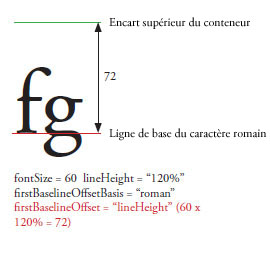
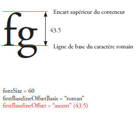
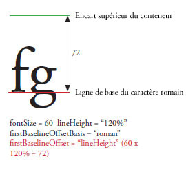
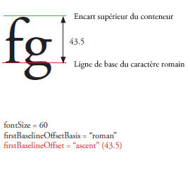

| Package | fl.text |
| Classe | public class TLFTextField |
| Héritage | TLFTextField |
| Version du langage: | ActionScript 3.0 |
| Version du produit: | Flash CS5 |
| Versions du moteur d’exécution: | Flash Player 10, AIR 1.5 |
Créez un objet TLFTextField de la même façon que vous créez un champ de texte avec la classe TextField. Utilisez ensuite la propriété textFlow pour appliquer le formatage avancé à partir des classes de TLF. Par exemple :
import fl.text.TLFTextField; import flashx.textLayout.formats.TextLayoutFormat; import flashx.textLayout.elements.TextFlow; var myTLFTextField:TLFTextField = new TLFTextField(); addChild(myTLFTextField); myTLFTextField.x = 10; myTLFTextField.y = 10; myTLFTextField.width = 200 myTLFTextField.height = 100; myTLFTextField.text = "This is my text"; var myFormat:TextLayoutFormat = new TextLayoutFormat(); myFormat.textIndent = 8; myFormat.color = 0x336633; myFormat.fontFamily = "Arial, Helvetica, _sans"; myFormat.fontSize = 24; var myTextFlow:TextFlow = myTLFTextField.textFlow; myTextFlow.hostFormat = myFormat; myTextFlow.flowComposer.updateAllControllers();
Plus d’exemples
Formatage du texte à l’aide de TLF
Importation et exportation de texte à l’aide de TLF
Gestion des conteneurs de texte à l’aide de TLF
Activation de la sélection, de la modification et de l’annulation de texte à l’aide de TLF
Gestion des événements à l’aide de TLF
Informations complémentaires
Eléments de l’API associés
 Masquer les propriétés publiques héritées
Masquer les propriétés publiques héritées Afficher les propriétés publiques héritées
Afficher les propriétés publiques héritées| Propriété | Défini par | ||
|---|---|---|---|
 | accessibilityImplementation : AccessibilityImplementation
Implémentation d’accessibilité (AccessibilityImplementation) actuelle pour cette occurrence d’InteractiveObject. | InteractiveObject | |
| accessibilityProperties : AccessibilityProperties
Options d’accessibilité actuelles de l’objet d’affichage. | DisplayObject | |
| alpha : Number
Indique la valeur de transparence alpha de l’objet spécifié. | DisplayObject | |
| alwaysShowSelection : Boolean
Lorsque la valeur définie est true et le champ de texte n’a pas le focus, Flash Player sélectionne le contenu du champ de texte en bleu. | TLFTextField | ||
| antiAliasType : String
Type d’anticrènelage appliqué à ce champ de texte. | TLFTextField | ||
| autoSize : String
Commande le dimensionnement et l’alignement automatiques des champs de texte. | TLFTextField | ||
| background : Boolean
Spécifie si le champ de texte a un remplissage d’arrière-plan. | TLFTextField | ||
| backgroundAlpha : Number
Spécifie la valeur alpha de l’arrière-plan du champ de texte. | TLFTextField | ||
| backgroundColor : uint
Spécifie la couleur d’arrière-plan du champ de texte. | TLFTextField | ||
| blendMode : String
Valeur de la classe BlendMode qui spécifie le mode de fusion à utiliser. | DisplayObject | |
| blendShader : Shader [écriture seule]
Définit un shader utilisé pour la fusion de l’arrière-plan et du premier plan. | DisplayObject | |
| blockProgression : Object
Spécifie la progression verticale ou horizontale du positionnement de la ligne. | TLFTextField | ||
| border : Boolean
Spécifie si le champ de texte comporte une bordure. | TLFTextField | ||
| borderAlpha : Number
Spécifie la valeur alpha de la bordure. | TLFTextField | ||
| borderColor : uint
Spécifie la bordure du champ de texte. | TLFTextField | ||
| borderWidth : Number
Spécifie la largeur de la bordure. | TLFTextField | ||
| bottomScrollV : int [lecture seule]
Entier (index basé sur 1) qui indique la ligne la plus basse visible dans le champ de texte spécifié. | TLFTextField | ||
| buttonMode : Boolean
Spécifie le mode de bouton du sprite. | Sprite | |
| cacheAsBitmap : Boolean
Si la valeur true est définie, les moteurs d’exécution de Flash placent en mémoire cache une version bitmap interne de l’objet d’affichage. | DisplayObject | |
| cacheAsBitmapMatrix : Matrix
S’il n’est pas nul, cet objet Matrix définit le mode de rendu d’un objet d’affichage lorsque cacheAsBitmap est définie sur true. | DisplayObject | |
| caretIndex : int [lecture seule]
L’index de la position du point d’insertion (caret). | TLFTextField | ||
| columnCount : Object
Nombre de colonnes de texte (adopte la valeur par défaut si la valeur est undefined pendant la propagation en cascade). | TLFTextField | ||
| columnGap : Object
Spécifie la valeur de l’espace de gouttière, en pixels, à laisser entre les colonnes (adopte la valeur par défaut si undefined pendant la propagation en cascade). | TLFTextField | ||
| columnWidth : Object
Largeur de colonne en pixels (adopte la valeur par défaut si undefined pendant la propagation en cascade). | TLFTextField | ||
| condenseWhite : Boolean
Valeur booléenne qui indique si l’espace blanc supplémentaire (espaces, saut de ligne, etc.) est supprimé dans un champ comportant du texte HTML ou un balisage TLF. | TLFTextField | ||
| constructor : Object
Référence à l’objet de classe ou à la fonction constructeur d’une occurrence donnée d’un objet. | Object | |
| contextMenu : NativeMenu
Spécifie le menu contextuel associé à l’objet. | InteractiveObject | |
| defaultTextFormat : flash.text:TextFormat
Spécifie le format appliqué au texte qui vient d’être inséré, notamment au texte saisi par un utilisateur ou inséré à l’aide de la méthode replaceSelectedText(). | TLFTextField | ||
| direction : String
Spécifie le niveau d’intégration bidirectionnelle par défaut du texte dans le bloc de texte. | TLFTextField | ||
| displayAsPassword : Boolean
Indique si le champ de texte est un champ de texte de mot de passe. | TLFTextField | ||
| doubleClickEnabled : Boolean
Spécifie si l’objet reçoit les événements doubleClick. | InteractiveObject | |
| dropTarget : DisplayObject [lecture seule]
Spécifie l’objet d’affichage sur lequel le sprite est glissé ou sur lequel il a été déposé. | Sprite | |
| embedFonts : Boolean
Spécifie si le rendu doit utiliser des polices vectorielles incorporées. | TLFTextField | ||
| filters : Array
Tableau indexé contenant tous les objets filtre actuellement associés à l’objet d’affichage. | DisplayObject | |
| firstBaselineOffset : Object
Spécifie la position de la ligne de base de la première ligne du conteneur. | TLFTextField | ||
| focusRect : Object
Spécifie si l’objet affiche un rectangle de focus. | InteractiveObject | |
| graphics : Graphics [lecture seule]
Spécifie l’objet Graphics appartenant au sprite qui prend en charge les commandes de dessin vectoriel. | Sprite | |
| gridFitType : String
Type d’adaptation à la grille appliqué à ce champ de texte. | TLFTextField | ||
| height : Number
Indique la hauteur de l’objet d’affichage, en pixels. | DisplayObject | |
| hitArea : Sprite
Désigne un autre sprite qui fera office de zone active d’un sprite. | Sprite | |
| htmlText : String
Contient la représentation HTML du contenu du champ de texte. | TLFTextField | ||
| length : int [lecture seule]
Nombre de caractères d’un champ de texte. | TLFTextField | ||
| loaderInfo : LoaderInfo [lecture seule]
Renvoie un objet LoaderInfo qui contient des informations relatives au chargement du fichier auquel appartient cet objet d’affichage. | DisplayObject | |
| mask : DisplayObject
L’objet d’affichage appelant est masqué par l’objet mask spécifié. | DisplayObject | |
| maxChars : int
Le nombre maximum de caractères que le champ de texte peut contenir, tels que saisis par un utilisateur. | TLFTextField | ||
| maxScrollH : int [lecture seule]
Valeur maximale de scrollH. | TLFTextField | ||
| maxScrollV : int [lecture seule]
Valeur maximale de scrollV. | TLFTextField | ||
| metaData : Object
Obtient les données d’objet de métadonnées de l’occurrence DisplayObject si les données d’meta a été stockée près de la l’occurrence de cette DisplayObject dans le fichier SWF à l’aide d’une balise de4 PlaceObject. | DisplayObject | |
| mouseChildren : Boolean
Détermine si les enfants de l’objet prennent en charge la souris ou les périphériques de saisie utilisateur. | DisplayObjectContainer | |
| mouseEnabled : Boolean
Spécifie si l’objet reçoit des messages de la souris ou d’un autre périphérique de saisie utilisateur. | InteractiveObject | |
| mouseWheelEnabled : Boolean
Valeur booléenne qui indique si Flash Player fait automatiquement défiler les champs de texte multiligne lorsque l’utilisateur clique sur le champ de texte et actionne la molette de sa souris. | TLFTextField | ||
| mouseX : Number [lecture seule]
Indique la coordonnée x de la souris ou ou la position du périphérique de saisie utilisateur, en pixels. | DisplayObject | |
| mouseY : Number [lecture seule]
Indique la coordonnée y de la souris ou la position du périphérique de saisie utilisateur, en pixels. | DisplayObject | |
| multiline : Boolean
Indique si le champ de texte est un champ de texte multiligne. | TLFTextField | ||
| name : String
Indique le nom d’occurrence de DisplayObject. | DisplayObject | |
| needsSoftKeyboard : Boolean
Indique si un clavier virtuel (clavier logiciel à l’écran) doit s’afficher lorsque cette occurrence d’InteractiveObject reçoit le focus. | InteractiveObject | |
| numChildren : int [lecture seule]
Renvoie le nombre d’enfants de l’objet. | DisplayObjectContainer | |
| numLines : int [lecture seule]
Définit le nombre de lignes de texte d’un champ multiligne. | TLFTextField | ||
| opaqueBackground : Object
Indique si l’objet d’affichage est opaque avec une couleur d’arrière-plan spécifique. | DisplayObject | |
| paddingBottom : Object
Encart inférieur en pixels (adopte la valeur par défaut si undefined pendant la propagation en cascade). | TLFTextField | ||
| paddingLeft : Object
Encart à gauche en pixels (adopte la valeur par défaut si undefined pendant la propagation en cascade). | TLFTextField | ||
| paddingRight : Object
Encart à droite en pixels (adopte la valeur par défaut si undefined pendant la propagation en cascade). | TLFTextField | ||
| paddingTop : Object
Encart supérieur en pixels (adopte la valeur par défaut si undefined pendant la propagation en cascade). | TLFTextField | ||
| parent : DisplayObjectContainer [lecture seule]
Indique l’objet DisplayObjectContainer qui contient l’objet d’affichage. | DisplayObject | |
| pixelMaxScrollV : int [lecture seule]
Valeur maximale de pixelScrollV. | TLFTextField | ||
| pixelScrollV : int
Position verticale du texte dans un champ de texte, en pixels, contrairement à la propriété scrollV qui est basée sur les lignes. | TLFTextField | ||
| restrict : String
Indique le jeu de caractères qu’un utilisateur peut rentrer dans le champ de texte. | TLFTextField | ||
| root : DisplayObject [lecture seule]
Pour un objet d’affichage résidant dans un fichier SWF chargé, la propriété root correspond à l’objet d’affichage de premier niveau dans la partie de la structure arborescente de la liste d’affichage représentée par ce fichier. | DisplayObject | |
| rotation : Number
Indique la rotation de l’occurrence de DisplayObject, en degrés, à partir de son orientation d’origine. | DisplayObject | |
| rotationX : Number
Indique la rotation de l’axe des x de l’occurrence DisplayObject, en degrés, à partir de son orientation d’origine par rapport au conteneur 3D parent. | DisplayObject | |
| rotationY : Number
Indique la rotation de l’axe des y de l’occurrence DisplayObject, en degrés, à partir de son orientation d’origine par rapport au conteneur 3D parent. | DisplayObject | |
| rotationZ : Number
Indique la rotation de l’axe des z de l’occurrence DisplayObject, en degrés, à partir de son orientation d’origine par rapport au conteneur 3D parent. | DisplayObject | |
| scale9Grid : Rectangle
Grille de mise à l’échelle en vigueur. | DisplayObject | |
| scaleX : Number
Indique l’échelle horizontale (pourcentage) de l’objet telle qu’elle est appliquée à partir du point d’alignement. | DisplayObject | |
| scaleY : Number
Indique l’échelle verticale (pourcentage) de l’objet telle qu’elle est appliquée à partir du point d’alignement. | DisplayObject | |
| scaleZ : Number
Indique l’échelle de profondeur (pourcentage) de l’objet tel qu’elle est appliquée à partir du point d’alignement. | DisplayObject | |
| scrollH : int
Position de défilement horizontal actuelle. | TLFTextField | ||
| scrollRect : Rectangle
Cadre de sélection du défilement de l’objet d’affichage. | DisplayObject | |
| scrollV : int
La position verticale du texte dans un champ de texte. | TLFTextField | ||
| selectable : Boolean
Une valeur booléenne qui indique si le champ de texte peut être sélectionné. | TLFTextField | ||
| selectionBeginIndex : int [lecture seule]
Valeur d’index de base zéro du premier caractère de la sélection actuelle. | TLFTextField | ||
| selectionEndIndex : int [lecture seule]
Valeur d’index de base zéro du dernier caractère de la sélection actuelle. | TLFTextField | ||
| sharpness : Number
La netteté ne peut pas être appliquée aux objets TextFields de TLF. | TLFTextField | ||
| softKeyboard : String
Contrôle l’aspect du clavier logiciel. | InteractiveObject | |
| softKeyboardInputAreaOfInterest : Rectangle
Définit la zone qui doit rester à l’écran lorsqu’un clavier logiciel s’affiche (non disponible sur iOS) | InteractiveObject | |
| soundTransform : flash.media:SoundTransform
Contrôle le son à l’intérieur du sprite. | Sprite | |
| stage : Stage [lecture seule]
Scène de l’objet d’affichage. | DisplayObject | |
| styleSheet : StyleSheet
Feuilles de style pour l’objet TextField de TLF. | TLFTextField | ||
| tabChildren : Boolean
Détermine si les enfants de l’objet prennent ou non en charge la tabulation. | DisplayObjectContainer | |
| tabEnabled : Boolean
Indique si cet objet est spécifié dans l’ordre de tabulation. | InteractiveObject | |
| tabIndex : int
Spécifie l’ordre de tabulation des objets dans un fichier SWF. | InteractiveObject | |
| text : String
Une chaîne qui correspond au texte du champ de texte. | TLFTextField | ||
| textColor : uint
Couleur du texte dans un champ de texte, au format hexadécimal. | TLFTextField | ||
| textFlow : flashx.textLayout.elements:TextFlow
Utilisez cette propriété pour affecter le formatage des classes TLF dans les packages flashx à l’occurrence de TLFTextField. | TLFTextField | ||
| textHeight : Number [lecture seule]
Hauteur du texte en pixels. | TLFTextField | ||
| textSnapshot : flash.text:TextSnapshot [lecture seule]
Renvoie un objet TextSnapshot pour l’occurrence de DisplayObjectContainer. | DisplayObjectContainer | |
| textWidth : Number [lecture seule]
Largeur du texte en pixels. | TLFTextField | ||
| thickness : Number
La propriété thickness n’est pas applicable à l’objet TextField de TLF. | TLFTextField | ||
| tlfMarkup : String
Définit ou récupère le balisage TLF du texte dans le champ de texte TLF. | TLFTextField | ||
| transform : flash.geom:Transform
Objet dont les propriétés se rapportent à la matrice, à la transformation des couleurs et aux limites des pixels d’un objet d’affichage. | DisplayObject | |
| type : String
Type du champ de texte. | TLFTextField | ||
| useHandCursor : Boolean
Valeur booléenne indiquant si le curseur en forme de main apparaît lorsque le pointeur survole un sprite dont la propriété buttonMode est définie sur true. | Sprite | |
| useRichTextClipboard : Boolean
Indique si vous souhaitez copier le formatage du texte en même temps que le texte dans le Presse-papiers. | TLFTextField | ||
| verticalAlign : String
Alignement vertical ou justification (adopte la valeur par défaut si undefined pendant la propagation en cascade). | TLFTextField | ||
| visible : Boolean
Indique si l’objet d’affichage est visible ou non. | DisplayObject | |
| width : Number
Indique la largeur de l’objet d’affichage, en pixels. | DisplayObject | |
| wordWrap : Boolean
Valeur booléenne indiquant si le champ de texte comporte un retour à la ligne. | TLFTextField | ||
| x : Number
Indique la coordonnée x de l’occurrence de DisplayObject par rapport aux coordonnées locales de l’objet DisplayObjectContainer parent. | DisplayObject | |
| y : Number
Indique la coordonnée y de l’occurrence de DisplayObject par rapport aux coordonnées locales de l’objet DisplayObjectContainer parent. | DisplayObject | |
| z : Number
Indique la position de coordonnée z le long de l’axe des z de l’occurrence DisplayObject par rapport au conteneur 3D parent. | DisplayObject | |
| Méthode | Défini par | ||
|---|---|---|---|
Constructeur associé aux objets TLFTextField. | TLFTextField | ||
|
Ajoute une occurrence DisplayObject enfant à cette occurrence DisplayObjectContainer. | DisplayObjectContainer | |
|
Ajoute une occurrence DisplayObject enfant à cette occurrence DisplayObjectContainer. | DisplayObjectContainer | |
| addEventListener(type:String, listener:Function, useCapture:Boolean = false, priority:int = 0, useWeakReference:Boolean = false):void
Enregistre un objet écouteur d’événement auprès d’un objet EventDispatcher afin que l’écouteur soit averti d’un événement. | EventDispatcher | |
Ajoute la chaîne spécifiée par le paramètre newText à la fin du texte du champ de texte. | TLFTextField | ||
|
Indique si les restrictions de sécurité entraîneraient l’omission des objets d’affichage de la liste renvoyée en appelant la méthode DisplayObjectContainer.getObjectsUnderPoint() avec le point « point » spécifié. | DisplayObjectContainer | |
|
Détermine si l’objet d’affichage spécifié est un enfant de l’occurrence de DisplayObjectContainer ou l’occurrence en tant que telle. | DisplayObjectContainer | |
|
Distribue un événement dans le flux d’événements. | EventDispatcher | |
|
Renvoie un rectangle qui définit la zone de l’objet d’affichage relativement au système de coordonnées de l’objet targetCoordinateSpace. | DisplayObject | |
Renvoie un rectangle représentant le cadre de sélection du caractère. | TLFTextField | ||
Renvoie la valeur d’index de base zéro du caractère au point spécifié par les paramètres x et y. | TLFTextField | ||
|
Renvoie l’occurrence enfant de l’objet d’affichage associée à l’index spécifié. | DisplayObjectContainer | |
|
Renvoie l’objet d’affichage enfant portant le nom spécifié. | DisplayObjectContainer | |
|
Renvoie la position d’index d’une occurrence enfant de DisplayObject. | DisplayObjectContainer | |
En fonction d’un caractère d’index, renvoie l’index du premier caractère dans le même paragraphe. | TLFTextField | ||
Renvoie une référence DisplayObject pour l’ID donné, pour une image ou un fichier SWF qui a été ajouté à un champ de texte qui applique le format HTML à l’aide de la balise <img>. | TLFTextField | ||
Renvoie la valeur d’index de base zéro de la ligne au point spécifié par les paramètres x et y. | TLFTextField | ||
Renvoie la valeur d’index de base zéro de la ligne qui contient le caractère spécifié par le paramètre charIndex. | TLFTextField | ||
Renvoie le nombre de caractères d’une ligne de texte donnée. | TLFTextField | ||
Renvoie les informations métriques relatives à une ligne de texte donnée. | TLFTextField | ||
Renvoie le caractère d’index du premier caractère de la ligne spécifiée par le paramètre lineIndex. | TLFTextField | ||
Renvoie le texte de la ligne spécifiée par le paramètre lineIndex. | TLFTextField | ||
|
Renvoie un tableau d’objets de niveau inférieur au point spécifié et qui sont les enfants (ou les petits-enfants, etc.) de l’occurrence de DisplayObjectContainer. | DisplayObjectContainer | |
En fonction d’un caractère d’index, renvoie la longueur du paragraphe qui contient le caractère donné. | TLFTextField | ||
|
Renvoie un rectangle qui définit les limites de l’objet d’affichage, en se basant sur le système de coordonnées défini par le paramètre targetCoordinateSpace, moins tout trait appliqué aux formes. | DisplayObject | |
Renvoie un objet TextFormat qui contient des informations de formatage pour la plage de texte délimitée par les paramètres beginIndex et endIndex. | TLFTextField | ||
|
Convertit l’objet point des coordonnées de scène (globales) vers les coordonnées de l’objet d’affichage (locales). | DisplayObject | |
|
Convertit un point bidimensionnel à partir des coordonnées de scène (globales) vers les coordonnées d’un objet d’affichage tridimensionnel (locales). | DisplayObject | |
|
Vérifie si des écouteurs sont enregistrés auprès de l’objet EventDispatcher pour un type spécifique d’événement. | EventDispatcher | |
|
Indique si la propriété spécifiée d’un objet est définie. | Object | |
|
Evalue le cadre de sélection de l’objet d’affichage pour savoir s’il recouvre ou recoupe le cadre de sélection de l’objet d’affichage obj. | DisplayObject | |
|
Evalue l’objet d’affichage pour savoir s’il recouvre ou recoupe le point spécifié par les paramètres x et y. | DisplayObject | |
Renvoie true si une police incorporée est disponible avec les paramètres fontName et fontStyle spécifiés, où Font.fontType est flash.text.FontType.EMBEDDED_CFF. | TLFTextField | ||
|
Indique si une occurrence de la classe Object figure dans la chaîne de prototype de l’objet spécifié en tant que paramètre. | Object | |
|
Convertit un point tridimensionnel des coordonnées de l’objet d’affichage tridimensionnel (locales) vers un point bidimensionnel dans les coordonnées de scène (globales). | DisplayObject | |
|
Convertit l’objet point des coordonnées de l’objet d’affichage (locales) vers les coordonnées de la scène (globales). | DisplayObject | |
|
Indique si la propriété spécifiée existe et est énumérable. | Object | |
|
Supprime l’occurrence enfant de DisplayObject spécifiée de la liste d’enfants de l’occurrence de DisplayObjectContainer. | DisplayObjectContainer | |
|
Supprime une occurrence enfant de DisplayObject de la position d’index spécifiée dans la liste d’enfants de DisplayObjectContainer. | DisplayObjectContainer | |
|
Supprime toutes les occurrences enfants de DisplayObject de la liste d’enfants de l’occurrence de DisplayObjectContainer. | DisplayObjectContainer | |
|
Supprime un écouteur de l’objet EventDispatcher. | EventDispatcher | |
Remplace la sélection actuelle par le contenu du paramètre value. | TLFTextField | ||
Remplace la plage de caractères que les paramètres beginIndex et endIndex spécifient par le contenu du paramètre newText. | TLFTextField | ||
|
Affiche un clavier virtuel. | InteractiveObject | |
|
Modifie la position d’un enfant existant dans le conteneur d’objet d’affichage. | DisplayObjectContainer | |
|
Définit la disponibilité d’une propriété dynamique pour les opérations en boucle. | Object | |
Définit comme sélectionné le texte désigné par les valeurs d’index des premier et dernier caractères, spécifiés par les paramètres beginIndex et endIndex. | TLFTextField | ||
Applique à la partie sélectionnée d’un champ de texte le format spécifié par le paramètre format. | TLFTextField | ||
|
Permet à l’utilisateur de faire glisser le sprite spécifié. | Sprite | |
|
Permet à l’utilisateur de faire glisser le sprite spécifié sur un périphérique tactile. | Sprite | |
|
Interrompt de façon récursive l’exécution du scénario de tous les clips ayant cet objet comme racine. | DisplayObjectContainer | |
|
Met fin à la méthode startDrag(). | Sprite | |
|
Met fin à la méthode startTouchDrag() en vue d’utiliser des périphériques tactiles. | Sprite | |
|
Intervertit l’ordre de plan (ordre d’empilement du premier plan vers l’arrière-plan) des deux objets enfant spécifiés. | DisplayObjectContainer | |
|
Intervertit l’ordre de plan (ordre d’empilement du premier plan vers l’arrière-plan) des objets enfant aux deux positions d’index spécifiées dans la liste d’enfants. | DisplayObjectContainer | |
|
Renvoie la représentation de chaîne de cet objet, formatée selon les paramètres régionaux en vigueur. | Object | |
|
Renvoie la représentation sous forme de chaîne de l’objet spécifié. | Object | |
|
Renvoie la valeur primitive de l’objet spécifié. | Object | |
|
Vérifie si un écouteur d’événement est enregistré auprès de cet objet EventDispatcher ou de ses ancêtres pour le type d’événement spécifié. | EventDispatcher | |
| Evénement | Synthèse | Défini par | ||
|---|---|---|---|---|
| [Evénement de diffusion] Distribué lorsque l’application Flash Player obtient le focus du système d’exploitation et devient active. | EventDispatcher | ||
| Distribué lorsqu’un objet d’affichage est ajouté à la liste d’affichage. | DisplayObject | ||
| Envoyé lorsqu’un objet d’affichage est ajouté dans la liste d’affichage de la scène, directement ou par l’intermédiaire d’une arborescence secondaire qui contient l’objet d’affichage. | DisplayObject | ||
| Distribué après la modification d’une valeur de contrôle, contrairement à l’événement textInput, qui est distribué avant la modification de la valeur. | TLFTextField | |||
| Distribué lorsque l’utilisateur sélectionne ’Effacer’ (ou ’Supprimer’) dans le menu contextuel. | InteractiveObject | ||
| Distribué lorsque l’utilisateur appuie sur le bouton principal de son périphérique de pointage et le relâche sur la même occurrence de InteractiveObject. | InteractiveObject | ||
| Distribué lorsque l’action d’un utilisateur active le menu contextuel associé à cet objet interactif dans une application AIR. | InteractiveObject | ||
| Distribué lorsque l’utilisateur active la combinaison de touches de raccourci propre à la plate-forme pour une opération de copie ou sélectionne "Copier" dans le menu contextuel. | InteractiveObject | ||
| Distribué lorsque l’utilisateur active la combinaison de touches de raccourci propre à la plate-forme pour une opération de coupage ou sélectionne "Couper" dans le menu contextuel. | InteractiveObject | ||
| [Evénement de diffusion] Distribué lorsque l’application Flash Player ou AIR perd le focus du système d’exploitation et devient inactive. | EventDispatcher | ||
| Distribué lorsque l’utilisateur appuie sur le bouton principal d’un périphérique de pointage et le relâche deux fois de suite sur la même occurrence d’InteractiveObject si l’indicateur doubleClickEnabled de cet objet est réglé sur true. | InteractiveObject | ||
| [événement de diffusion] Distribué lorsque la tête de lecture est placée sur une nouvelle image. | DisplayObject | ||
| [événement de diffusion] Distribué lorsque la tête de lecture quitte l’image en cours. | DisplayObject | ||
| Distribué après la prise de focus par un objet d’affichage. | InteractiveObject | ||
| Distribué après la perte de focus par un objet d’affichage. | InteractiveObject | ||
| [événement de diffusion] Distribué après l’exécution des constructeurs des objets d’affichage d’image, mais avant celle des scripts d’image. | DisplayObject | ||
| Distribué lorsque l’utilisateur crée un point de contact le long du bord de la surface tactile à l’aide d’une occurrence InteractiveObject (par exemple, en appuyant le long du bord de la surface tactile sur la télécommande Siri Remote pour l’Apple TV). Certains périphériques peuvent également interpréter ce contact comme une combinaison de plusieurs événements tactiles. | InteractiveObject | ||
| Distribué lorsque l’utilisateur appuie sur deux points de contact sur la même occurrence d’InteractiveObject sur un périphérique tactile (notamment lorsque l’utilisateur appuie avec deux doigts sur l’objet d’affichage d’un téléphone portable ou d’une tablette munis d’un écran tactile, puis les retire). | InteractiveObject | ||
| Distribué lorsque l’utilisateur déplace un point de contact sur l’occurrence d’InteractiveObject d’un périphérique tactile (notamment lorsqu’il déplace un doigt de gauche à droite sur l’objet d’affichage d’un téléphone portable ou d’une tablette munis d’un écran tactile). | InteractiveObject | ||
| Distribué lorsque l’utilisateur effectue un mouvement de rotation sur un point de contact à l’aide d’une occurrence d’InteractiveObject (par exemple, lorsqu’il pose deux doigts sur l’objet d’affichage d’un téléphone portable ou d’une tablette munis d’un écran tactile, puis les fait pivoter). | InteractiveObject | ||
| Distribué lorsque l’utilisateur effectue un mouvement de glissement sur un point de contact à l’aide d’une occurrence d’InteractiveObject (par exemple, lorsqu’il pose trois doigts puis les déplace parallèlement sur l’objet d’affichage d’un téléphone portable ou d’une tablette munis d’un écran tactile). | InteractiveObject | ||
| Distribué lorsque l’utilisateur crée un point de contact à l’aide d’une occurrence d’InteractiveObject, puis appuie brièvement sur un périphérique tactile (notamment lorsqu’il place plusieurs doigts sur l’objet d’affichage d’un téléphone portable ou d’une tablette munis d’un écran tactile pour ouvrir un menu, puis appuie brièvement avec un doigt pour sélectionner une option de menu). | InteractiveObject | ||
| Distribué lorsque l’utilisateur effectue un mouvement de zoom sur un point de contact à l’aide d’une occurrence d’InteractiveObject (par exemple, lorsqu’il pose deux doigts, puis les écarte rapidement sur l’objet d’affichage d’un téléphone portable ou d’une tablette munis d’un écran tactile). | InteractiveObject | ||
| Cet événement est distribué à une application cliente prenant en charge la saisie en ligne avec un éditeur IME. | InteractiveObject | ||
| Distribué lorsque l’utilisateur appuie sur une touche. | InteractiveObject | ||
| Distribué lorsque l’utilisateur tente de déplacer le focus à l’aide du clavier. | InteractiveObject | ||
| Distribué lorsque l’utilisateur relâche une touche. | InteractiveObject | ||
| Distribué lorsqu’un utilisateur clique sur un lien hypertexte dans un champ de texte HTML dont l’URL commence par « event: ». | TLFTextField | |||
| Distribué lorsque l’utilisateur appuie sur le bouton central de son périphérique de pointage et le relâche sur la même occurrence de InteractiveObject. | InteractiveObject | ||
| Distribué lorsqu’un utilisateur appuie sur le bouton du périphérique de pointage central sur une occurrence InteractiveObject. | InteractiveObject | ||
| Distribué lorsqu’un utilisateur relâche le bouton du périphérique de pointage sur une occurrence InteractiveObject. | InteractiveObject | ||
| Distribué lorsqu’un utilisateur appuie sur le bouton du périphérique de pointage sur une occurrence InteractiveObject. | InteractiveObject | ||
| Distribué lorsque l’utilisateur tente de déplacer le focus à l’aide d’un périphérique de pointage. | InteractiveObject | ||
| Distribué lorsque l’utilisateur déplace le périphérique de pointage placé sur une occurrence de InteractiveObject. | InteractiveObject | ||
| Distribué lorsque l’utilisateur éloigne un périphérique de pointage d’une occurrence de InteractiveObject. | InteractiveObject | ||
| Distribué lorsque l’utilisateur place un périphérique de pointage sur une occurrence de InteractiveObject. | InteractiveObject | ||
| Distribué lorsqu’un utilisateur relâche le bouton du périphérique de pointage sur une occurrence InteractiveObject. | InteractiveObject | ||
| Distribué lorsque la molette d’une souris est actionnée sur une occurrence de InteractiveObject. | InteractiveObject | ||
| Distribué par l’initiateur glisser InteractiveObject lorsque l’utilisateur arrête l’opération glisser. | InteractiveObject | ||
| Distribué par l’objet InteractiveObject cible lorsqu’un objet glissé est déposé dessus et que l’opération déposer a été acceptée avec un appel à DragManager.acceptDragDrop(). | InteractiveObject | ||
| Distribué par un InteractiveObject lorsqu’une opération glisser entre dans ses limites. | InteractiveObject | ||
| Distribué par un InteractiveObject lorsqu’une opération glisser sort des limites. | InteractiveObject | ||
| Distribué par un objet InteractiveObject de façon continue lorsqu’une opération glisser reste dans ses limites. | InteractiveObject | ||
| Distribué au début d’une opération glisser par l’objet InteractiveObject spécifié comme initiateur de l’action glisser dans l’appel DragManager.doDrag(). | InteractiveObject | ||
| Distribué lors d’une opération glisser par l’objet InteractiveObject spécifié comme initiateur de l’action glisser dans l’appel DragManager.doDrag(). | InteractiveObject | ||
| Distribué lorsque l’utilisateur active la combinaison de touches de raccourci propre à la plate-forme pour une opération de collage ou sélectionne "Coller" dans le menu contextuel. | InteractiveObject | ||
| Distribué lorsque l’utilisateur approche un stylet actif de l’écran après le seuil de détection de proximité de l’écran. | InteractiveObject | ||
| Distribué lorsque l’utilisateur soulève un stylet actif au-dessus du seuil de détection de proximité de l’écran. | InteractiveObject | ||
| Distribué lorsque l’utilisateur déplace un stylet actif sur l’écran tout en respectant le seuil de détection de proximité. | InteractiveObject | ||
| Distribué lorsque l’utilisateur déplace un stylet actif en dehors de cet objet InteractiveObject, tout en respectant le seuil de détection de proximité de l’écran. | InteractiveObject | ||
| Distribué lorsque l’utilisateur déplace un stylet actif directement au-dessus de cet objet InteractiveObject, tout en respectant le seuil de détection de proximité de l’écran. | InteractiveObject | ||
| Distribué lorsque l’utilisateur déplace un stylet actif hors de cet objet InteractiveObject et de l’un de ses enfants, tout en respectant le seuil de détection de proximité de l’écran. | InteractiveObject | ||
| Distribué lorsque l’utilisateur déplace un stylet actif sur cet objet InteractiveObject de l’extérieur de l’arborescence d’objets de descendants dans la liste d’affichage (tout en respectant le seuil de détection de proximité de l’écran). | InteractiveObject | ||
| Distribué lorsqu’un utilisateur relâche le bouton du périphérique de pointage après avoir appuyé sur le bouton sur une occurrence d’InteractiveObject, puis après avoir déplacé le périphérique de pointage hors de l’occurrence d’InteractiveObject. | InteractiveObject | ||
| Distribué lorsqu’un objet d’affichage est sur le point d’être supprimé de la liste d’affichage. | DisplayObject | ||
| Distribué lorsqu’un objet d’affichage est sur le point d’être supprimé de la liste d’affichage de la scène, directement ou par l’intermédiaire de la suppression d’une arborescence secondaire qui contient l’objet d’affichage. | DisplayObject | ||
| [événement de diffusion] Distribué lorsque la liste d’affichage est sur le point d’être mise à jour et restituée. | DisplayObject | ||
| Distribué lorsque l’utilisateur appuie sur le bouton droit de son périphérique de pointage et le relâche sur la même occurrence de InteractiveObject. | InteractiveObject | ||
| Distribué lorsqu’un utilisateur appuie sur le bouton du périphérique de pointage sur une occurrence InteractiveObject. | InteractiveObject | ||
| Distribué lorsqu’un utilisateur relâche le bouton du périphérique de pointage sur une occurrence InteractiveObject. | InteractiveObject | ||
| Distribué lorsque l’utilisateur éloigne un périphérique de pointage d’une occurrence de InteractiveObject. | InteractiveObject | ||
| Distribué lorsque l’utilisateur place un périphérique de pointage sur une occurrence de InteractiveObject. | InteractiveObject | ||
| Distribué par un objet TextField après une opération de défilement effectuée par l’utilisateur. | TLFTextField | |||
| Distribué lorsque l’utilisateur active la combinaison de touches de raccourci propre à la plate-forme pour tout sélectionner ou choisit "Sélectionner tout" dans le menu contextuel. | InteractiveObject | ||
| Distribué immédiatement après l’affichage du clavier logiciel. | InteractiveObject | ||
| Distribué immédiatement avant l’affichage du clavier logiciel. | InteractiveObject | ||
| Distribué immédiatement après la disparition du clavier logiciel. | InteractiveObject | ||
| Distribué lorsque la valeur de l’indicateur tabChildren de l’objet change. | InteractiveObject | ||
| Distribué lorsque l’indicateur tabEnabled de l’objet change. | InteractiveObject | ||
| Distribué lorsque la valeur de la propriété tabIndex de l’objet change. | InteractiveObject | ||
| Flash Player distribue l’événement textInput lorsqu’un utilisateur entre un ou plusieurs caractères de texte. | TLFTextField | |||
| Distribué lorsque l’utilisateur touche pour la première fois un périphérique tactile (notamment lorsqu’il pose un doigt sur un téléphone portable ou une tablette munis d’un écran tactile). | InteractiveObject | ||
| Distribué lorsque l’utilisateur cesse le contact avec un périphérique tactile (notamment lorsqu’il retire le doigt d’un téléphone portable ou d’une tablette munis d’un écran tactile). | InteractiveObject | ||
| Distribué lorsque l’utilisateur appuie sur le périphérique, et est continuellement distribué jusqu’au retrait du point de contact. | InteractiveObject | ||
| Distribué lorsque l’utilisateur retire le point de contact d’une occurrence d’InteractiveObject sur un périphérique tactile (notamment lorsqu’il fait glisser un doigt d’un objet d’affichage vers un autre sur un téléphone portable ou une tablette munis d’un écran tactile). | InteractiveObject | ||
| Distribué lorsque l’utilisateur déplace le point de contact sur une occurrence d’InteractiveObject sur un périphérique tactile (notamment lorsqu’il fait glisser un doigt d’un point se trouvant en dehors d’un objet d’affichage vers un point sur l’objet d’affichage d’un téléphone portable ou d’une tablette munis d’un écran tactile). | InteractiveObject | ||
| Distribué lorsque l’utilisateur retire le point de contact d’une occurrence d’InteractiveObject sur un périphérique tactile (notamment lorsqu’il fait glisser un doigt d’un se trouvant sur l’objet d’affichage d’un téléphone portable ou une tablette munis d’un écran tactile vers un point se trouvant en dehors de cet objet). | InteractiveObject | ||
| Distribué lorsque l’utilisateur déplace le point de contact sur une occurrence d’InteractiveObject sur un périphérique tactile (notamment lorsqu’il fait glisser un doigt d’un point se trouvant en dehors d’un objet d’affichage vers un point sur l’objet d’affichage d’un téléphone portable ou d’une tablette munis d’un écran tactile). | InteractiveObject | ||
| Distribué lorsque l’utilisateur lève le point de contact sur la même occurrence d’InteractiveObject sur laquelle le contact a été lancé sur un périphérique tactile (notamment lorsqu’il appuie avec un doigt à partir d’un point de contact unique sur l’objet d’affichage d’un téléphone portable ou d’une tablette munis d’un écran tactile, puis le retire). | InteractiveObject | ||
alwaysShowSelection | propriété |
alwaysShowSelection:Boolean| Version du langage: | ActionScript 3.0 |
| Versions du moteur d’exécution: | Flash Player 10, AIR 1.5 |
Lorsque la valeur définie est true et le champ de texte n’a pas le focus, Flash Player sélectionne le contenu du champ de texte en bleu. Lorsque défini sur false et si le champ de texte n’a pas le focus, Flash Player ne sélectionne pas le contenu du champ de texte.
Exemple :
package
{
import flash.display.Sprite;
import fl.text.TLFTextField;
import flash.text.TextFieldType;
public class TLFTextField_alwaysShowSelection extends Sprite
{
public function TLFTextField_alwaysShowSelection()
{
var label1:TLFTextField = createTLFTextField(0, 20, 200, 20);
label1.text = "This text is selected.";
label1.setSelection(0, 9);
label1.alwaysShowSelection = true;
var label2:TLFTextField = createTLFTextField(0, 50, 200, 20);
label2.text = "Drag to select some of this text.";
}
private function createTLFTextField(x:Number, y:Number, width:Number, height:Number):TLFTextField
{
var result:TLFTextField = new TLFTextField();
result.x = x;
result.y = y;
result.width = width;
result.height = height;
addChild(result);
return result;
}
}
}
La valeur par défaut est false.
Implémentation
public function get alwaysShowSelection():Boolean public function set alwaysShowSelection(value:Boolean):voidEléments de l’API associés
antiAliasType | propriété |
antiAliasType:String| Version du langage: | ActionScript 3.0 |
| Versions du moteur d’exécution: | Flash Player 10, AIR 1.5 |
Type d’anticrènelage appliqué à ce champ de texte. Utilisez les constantes flash.text.AntiAliasType pour cette propriété. Vous ne pouvez contrôler cette définition que si la police est incorporée (avec la propriété embedFonts définie sur true).
Pour définir les valeurs pour cette propriété, utilisez les valeurs de chaîne suivantes :
| Valeur de chaîne | Description |
|---|---|
flash.text.AntiAliasType.NORMAL | Applique un anticrènelage ordinaire au texte. Ceci correspond au type d’anticrènelage utilisé par Flash Player 7 et les versions précédentes. |
flash.text.AntiAliasType.ADVANCED | Applique un anticrènelage avancé qui rend le texte plus lisible (cette fonctionnalité est devenue disponible dans Flash Player 8). Anticrènelage avancé permet d’obtenir une qualité du rendu des polices de petite taille. Il est préférable de l’utiliser avec les applications comprenant une grande quantité de texte de petite taille. L’anticrènelage avancé n’est pas recommandé pour les polices de plus de 48 points. |
La valeur par défaut est flash.text.AntiAliasType.NORMAL.
Implémentation
public function get antiAliasType():String public function set antiAliasType(value:String):voidEléments de l’API associés
autoSize | propriété |
autoSize:String| Version du langage: | ActionScript 3.0 |
| Versions du moteur d’exécution: | Flash Player 10, AIR 1.5 |
Commande le dimensionnement et l’alignement automatiques des champs de texte. Les valeurs acceptables pour les constantes TextFieldAutoSize sont : TextFieldAutoSize.NONE (par défaut), TextFieldAutoSize.LEFT, TextFieldAutoSize.RIGHT et TextFieldAutoSize.CENTER.
Si autoSize est défini sur TextFieldAutoSize.NONE (par défaut), aucun redimensionnement n’a lieu.
Si autoSize est défini sur TextFieldAutoSize.LEFT, le texte est alors traité comme du texte cadré à gauche, ce qui signifie que la marge gauche du champ de texte reste fixe et tout redimensionnement d’un champ de texte sur une seule ligne se fera dans la marge de droite. Si le texte contient un saut de ligne (par exemple "\n" ou "\r") le bas est alors également redimensionné pour s’adapter à la ligne suivante du texte. Si wordWrap est également défini sur true, seul le bas du champ de texte est redimensionné et le côté droit reste fixe.
Si autoSize est défini sur TextFieldAutoSize.RIGHT, le texte est alors traité comme du texte cadré à droite, ce qui signifie que la marge droite du champ de texte reste fixe et tout redimensionnement d’un champ de texte sur une seule ligne se fera dans la marge de gauche. Si le texte contient un saut de ligne (par exemple "\n" ou "\r") le bas est alors également redimensionné pour s’adapter à la ligne suivante du texte. Si wordWrap est également défini sur true, seul le bas du champ de texte est redimensionné et le côté gauche reste fixe.
Si autoSize est défini sur TextFieldAutoSize.CENTER, le texte est traité comme du texte centré, ce qui signifie que tout redimensionnement d’un champ de texte sur une seule ligne est uniformément réparti sur les marges droite et gauche. Si le texte contient un saut de ligne (par exemple "\n" ou "\r") le bas est alors également redimensionné pour s’adapter à la ligne suivante du texte. Si wordWrap est également défini sur true, seul le bas du champ de texte est redimensionné et les côtés gauche et droit restent fixe.
Implémentation
public function get autoSize():String public function set autoSize(value:String):voidValeur émise
ArgumentError — Le paramètre autoSize spécifié n’appartient pas à flash.text.TextFieldAutoSize.
|
Eléments de l’API associés
background | propriété |
background:Boolean| Version du langage: | ActionScript 3.0 |
| Versions du moteur d’exécution: | Flash Player 10, AIR 1.5 |
Spécifie si le champ de texte a un remplissage d’arrière-plan. Si true, le champ de texte a un remplissage d’arrière-plan. Si false, le champ de texte n’a pas de remplissage d’arrière-plan. La propriété backgroundColor permet de définir la couleur d’arrière-plan d’un champ de texte.
La valeur par défaut est false.
Implémentation
public function get background():Boolean public function set background(value:Boolean):voidEléments de l’API associés
backgroundAlpha | propriété |
backgroundAlpha:Number| Version du langage: | ActionScript 3.0 |
| Versions du moteur d’exécution: | Flash Player 10, AIR 1.5 |
Spécifie la valeur alpha de l’arrière-plan du champ de texte. La valeur alpha de l’arrière-plan peut être définie sur une valeur comprise entre 0 (invisible) et 1 (uni). Cette propriété peut être extraite ou définie, même s’il n’existe pas encore d’arrière-plan, mais l’effet alpha n’est visible que si la propriété background du champ de texte est définie sur true.
La valeur par défaut est 1.0.
Implémentation
public function get backgroundAlpha():Number public function set backgroundAlpha(value:Number):voidEléments de l’API associés
backgroundColor | propriété |
backgroundColor:uint| Version du langage: | ActionScript 3.0 |
| Versions du moteur d’exécution: | Flash Player 10, AIR 1.5 |
Spécifie la couleur d’arrière-plan du champ de texte. Cette propriété peut être extraite ou définie, même s’il n’y a pas encore d’arrière-plan, mais la couleur n’est visible que si la propriété background du champ de texte est définie sur true.
La valeur par défaut est 0xFFFFFF (white).
Implémentation
public function get backgroundColor():uint public function set backgroundColor(value:uint):voidEléments de l’API associés
blockProgression | propriété |
blockProgression:Object| Version du langage: | ActionScript 3.0 |
| Version du produit: | Flash CS5 |
| Versions du moteur d’exécution: | Flash Player 10, AIR 1.5 |
Spécifie la progression verticale ou horizontale du positionnement de la ligne. Les lignes sont placées de haut en bas (BlockProgression.TB, pour le texte horizontal) ou de droite à gauche (BlockProgression.RL, pour le texte vertical).
Les valeurs légales sont flashx.textLayout.formats.BlockProgression.RL, flashx.textLayout.formats.BlockProgression.TB et flashx.textLayout.formats.FormatValue.INHERIT.
Si lors de la propagation en cascade, la valeur est undefined, cette propriété héritera ses valeurs d’un ancêtre. Si aucun ancêtre n’a défini cette propriété, elle aura une valeur de TB.
La valeur par défaut est undefined (indicates not set).
Implémentation
public function get blockProgression():Object public function set blockProgression(value:Object):voidEléments de l’API associés
border | propriété |
border:Boolean| Version du langage: | ActionScript 3.0 |
| Versions du moteur d’exécution: | Flash Player 10, AIR 1.5 |
Spécifie si le champ de texte comporte une bordure. Si true, le champ de texte comporte une bordure. Si false, le champ de texte ne comporte pas de bordure. La propriété borderColor permet de définir la couleur de la bordure.
La valeur par défaut est false.
Implémentation
public function get border():Boolean public function set border(value:Boolean):voidEléments de l’API associés
borderAlpha | propriété |
borderAlpha:Number| Version du langage: | ActionScript 3.0 |
| Versions du moteur d’exécution: | Flash Player 10, AIR 1.5 |
Spécifie la valeur alpha de la bordure. La valeur alpha de la bordure peut être définie sur une valeur comprise entre 0 (invisible) et 1 (unie). Cette propriété peut être extraite ou définie, même s’il n’existe pas encore de bordure, mais l’effet alpha n’est visible que si la propriété border du champ de texte est définie sur true.
La valeur par défaut est 1.0.
Implémentation
public function get borderAlpha():Number public function set borderAlpha(value:Number):voidEléments de l’API associés
borderColor | propriété |
borderColor:uint| Version du langage: | ActionScript 3.0 |
| Versions du moteur d’exécution: | Flash Player 10, AIR 1.5 |
Spécifie la bordure du champ de texte. La valeur par défaut est 0x000000 (noir). Cette propriété peut être extraite ou définie, même s’il n’y a pas encore de bordure, mais la couleur n’est visible que si la propriété border du champ de texte est définie sur true.
Implémentation
public function get borderColor():uint public function set borderColor(value:uint):voidEléments de l’API associés
borderWidth | propriété |
borderWidth:Number| Version du langage: | ActionScript 3.0 |
| Versions du moteur d’exécution: | Flash Player 10, AIR 1.5 |
Spécifie la largeur de la bordure. Il est possible de définir la largeur de la bordure sur une valeur comprise entre 1 et 100. Cette propriété peut être extraite ou définie, même s’il n’existe pas encore de bordure, mais la largeur n’est visible que si la propriété border du champ de texte est définie sur true.
La largeur de la bordure est prise en compte lorsque la largeur ou la hauteur du champ de texte est calculée. Pour obtenir la largeur ou la hauteur du conteneur de texte sans la bordure, il convient de soustraire 2 fois la largeur de bordure de la valeur de largeur ou de hauteur.
Par exemple, txtHeight = tlf.height - (2 tlf.borderwidth);.
La valeur par défaut est 1.
Implémentation
public function get borderWidth():Number public function set borderWidth(value:Number):voidEléments de l’API associés
bottomScrollV | propriété |
bottomScrollV:int [lecture seule] | Version du langage: | ActionScript 3.0 |
| Versions du moteur d’exécution: | Flash Player 10, AIR 1.5 |
Entier (index basé sur 1) qui indique la ligne la plus basse visible dans le champ de texte spécifié. Considérez le champ de texte comme une fenêtre sur un bloc de texte. La propriété scrollV est l’index en base 1 de la ligne visible la plus haute dans la fenêtre et bottomScroll est la dernière ligne visible dans la fenêtre.
Tout le texte situé entre les lignes désignées par scrollV et bottomScrollV est visible dans le champ de texte.
Implémentation
public function get bottomScrollV():intEléments de l’API associés
caretIndex | propriété |
caretIndex:int [lecture seule] | Version du langage: | ActionScript 3.0 |
| Versions du moteur d’exécution: | Flash Player 10, AIR 1.5 |
L’index de la position du point d’insertion (caret). Si aucun point d’insertion ne s’affiche, cette valeur correspond à la position du point d’insertion en cas de restauration du focus sur le champ (il s’agit généralement du dernier emplacement du point d’insertion, ou 0 si le champ n’a pas eu le focus).
Les index de plages de sélection sont de base zéro (par exemple, la première position est 0, la deuxième position est 1, etc.).
Exemple :
package
{
import flash.display.Sprite;
import flash.events.MouseEvent;
import fl.text.TLFTextField;
import flash.text.TextFieldType;
public class TLFTextField_caretIndex extends Sprite
{
public function TLFTextField_caretIndex()
{
var tlf:TLFTextField = createTLFTextField(10, 10, 100, 100);
tlf.wordWrap = true;
tlf.type = TextFieldType.INPUT;
tlf.text = "Click in this text field. Compare the difference between clicking without selecting versus clicking and selecting text.";
tlf.addEventListener(MouseEvent.CLICK, printCursorPosition);
}
private function printCursorPosition(event:MouseEvent):void
{
var tlf:TLFTextField = TLFTextField(event.currentTarget);
trace("caretIndex:", tlf.caretIndex);
trace("selectionBeginIndex:", tlf.selectionBeginIndex);
trace("selectionEndIndex:", tlf.selectionEndIndex);
}
private function createTLFTextField(x:Number, y:Number, width:Number, height:Number):TLFTextField
{
var result:TLFTextField = new TLFTextField();
result.x = x;
result.y = y;
result.width = width;
result.height = height;
addChild(result);
return result;
}
}
}
Implémentation
public function get caretIndex():intEléments de l’API associés
columnCount | propriété |
columnCount:Object| Version du langage: | ActionScript 3.0 |
| Versions du moteur d’exécution: | Flash Player 10, AIR 1.5 |
Nombre de colonnes de texte (adopte la valeur par défaut si la valeur est undefined pendant la propagation en cascade). Le numéro de la colonne prévaut sur les autres paramètres de colonne. La valeur est un nombre entier ou FormatValue.AUTO si elle n’est pas spécifiée. Si le compte columnCount n’est pas spécifié, la largeur columnWidth est utilisée pour créer autant de colonnes que le conteneur peut en contenir.
Les valeurs valides en tant que chaîne sont flashx.textLayout.formats.FormatValue.AUTO, flashx.textLayout.formats.FormatValue.INHERIT et ints de 1 à 50.
Si lors de la propagation en cascade, la valeur est undefined, cette propriété aura la valeur AUTO.
La valeur par défaut est undefined (indicates not set).
Implémentation
public function get columnCount():Object public function set columnCount(value:Object):voidEléments de l’API associés
columnGap | propriété |
columnGap:Object| Version du langage: | ActionScript 3.0 |
| Versions du moteur d’exécution: | Flash Player 10, AIR 1.5 |
Spécifie la valeur de l’espace de gouttière, en pixels, à laisser entre les colonnes (adopte la valeur par défaut si undefined pendant la propagation en cascade).
Les valeurs valides sont des nombres compris entre 0 et 1000 et flashx.textLayout.formats.FormatValue.INHERIT.
Si lors de la propagation en cascade, la valeur est undefined, cette propriété aura la valeur 20.
La valeur par défaut est undefined (indicates not set).
Implémentation
public function get columnGap():Object public function set columnGap(value:Object):voidEléments de l’API associés
columnWidth | propriété |
columnWidth:Object| Version du langage: | ActionScript 3.0 |
| Version du produit: | Flash CS5 |
| Versions du moteur d’exécution: | Flash Player 10, AIR 1.5 |
Largeur de colonne en pixels (adopte la valeur par défaut si undefined pendant la propagation en cascade). Si vous spécifiez la largeur des colonnes, mais pas le nombre, l’objet TextLayout va créer autant de colonnes de cette largeur que possible, à partir des paramètres columnGap et de la largeur du conteneur. Tout espace restant est laissé après la dernière colonne. La valeur est un nombre.
Les valeurs valides en tant que chaîne sont flashx.textLayout.formats.FormatValue.AUTO, flashx.textLayout.formats.FormatValue.INHERIT et des nombres de 0 à 8000.
Si lors de la propagation en cascade, la valeur est undefined, cette propriété aura la valeur AUTO.
La valeur par défaut est undefined (indicates not set).
Implémentation
public function get columnWidth():Object public function set columnWidth(value:Object):voidEléments de l’API associés
condenseWhite | propriété |
condenseWhite:Boolean| Version du langage: | ActionScript 3.0 |
| Version du produit: | Flash CS5 |
| Versions du moteur d’exécution: | Flash Player 10, AIR 1.5 |
Valeur booléenne qui indique si l’espace blanc supplémentaire (espaces, saut de ligne, etc.) est supprimé dans un champ comportant du texte HTML ou un balisage TLF. La valeur par défaut est false. La propriété condenseWhite affecte uniquement le balisage TLF ou le texte défini avec la propriété htmlText, et non la propriété text. Si vous définissez du texte avec la propriété text, la propriété condenseWhite est ignorée.
Si la propriété condenseWhite est définie sur true, utilisez les balises HTML standard, telles que <br> et <p>, pour insérer des sauts de ligne dans le champ de texte.
Définissez la propriété condenseWhite avant de définir la propriété htmlText ou la propriété tlfMarkup.
L’exemple suivant explique comment utiliser la propriété condenseWhite pour supprimer les espaces supplémentaires du contenu tlfMarkup :
import fl.text.TLFTextField; var my_tlf:TLFTextField = new TLFTextField(); my_tlf.autoSize = 'left'; // This line removes white space from tlfMarkup my_tlf.condenseWhite = true; addChild(my_tlf); var my_markup:String = '<TextFlow xmlns="http://ns.adobe.com/textLayout/2008">' + ' <p>' + ' <span>Here is the first span.</span>' + ' \n' + ' <span>And here is the second span.</span>' + ' </p>' + '</TextFlow>'; my_tlf.tlfMarkup = my_markup;
La valeur par défaut est false.
Implémentation
public function get condenseWhite():Boolean public function set condenseWhite(value:Boolean):voidEléments de l’API associés
defaultTextFormat | propriété |
defaultTextFormat:flash.text:TextFormat| Version du langage: | ActionScript 3.0 |
| Version du produit: | Flash CS5 |
| Versions du moteur d’exécution: | Flash Player 10, AIR 1.5 |
Spécifie le format appliqué au texte qui vient d’être inséré, notamment au texte saisi par un utilisateur ou inséré à l’aide de la méthode replaceSelectedText().
Implémentation
public function get defaultTextFormat():flash.text:TextFormat public function set defaultTextFormat(value:flash.text:TextFormat):voidEléments de l’API associés
direction | propriété |
direction:String| Version du langage: | ActionScript 3.0 |
| Version du produit: | Flash CS5 |
| Versions du moteur d’exécution: | Flash Player 10, AIR 1.5 |
Spécifie le niveau d’intégration bidirectionnelle par défaut du texte dans le bloc de texte. Sens de lecture de gauche à droite, comme dans les scripts de style latin, ou de droite à gauche, comme en arabe ou en hébreu. Cette propriété affecte également le sens de la colonne lorsqu’elle est appliquée au niveau du conteneur. Les colonnes peuvent se lire de gauche à droite ou de droite à gauche, exactement comme du texte. Voici quelques exemples :

Les valeurs valides sont flashx.textLayout.formats.Direction.LTR, flashx.textLayout.formats.Direction.RTL, flashx.textLayout.formats.FormatValue.INHERIT.
Si lors de la propagation en cascade, la valeur est undefined, cette propriété héritera ses valeurs d’un ancêtre. Si aucun ancêtre n’a défini cette propriété, elle aura la valeur LTR.
La valeur par défaut est undefined (indicates not set).
Implémentation
public function get direction():String public function set direction(value:String):voidEléments de l’API associés
displayAsPassword | propriété |
displayAsPassword:Boolean| Version du langage: | ActionScript 3.0 |
| Version du produit: | Flash CS5 |
| Versions du moteur d’exécution: | Flash Player 10, AIR 1.5 |
Indique si le champ de texte est un champ de texte de mot de passe. Si la valeur de cette propriété est true, le champ de texte est traité en tant que mot de passe et masque les caractères d’entrée en utilisant les astérisques à la place des caractères. Si false, le champ de texte n’est pas traité comme un mot de passe. Lorsque le mode mot de passe est activé, les commandes Couper et Copier et leurs raccourcis clavier ne fonctionnent pas. Ce mécanisme de sécurité empêche un utilisateur malhonnête d’utiliser les raccourcis pour découvrir le mot de passe d’un ordinateur sans surveillance.
La valeur par défaut est false.
Implémentation
public function get displayAsPassword():Boolean public function set displayAsPassword(value:Boolean):voidembedFonts | propriété |
embedFonts:Boolean| Version du langage: | ActionScript 3.0 |
| Version du produit: | Flash CS5 |
| Versions du moteur d’exécution: | Flash Player 10, AIR 1.5 |
Spécifie si le rendu doit utiliser des polices vectorielles incorporées. Si false, Flash Player restitue le champ de texte à l’aide de polices de périphérique.
Si vous définissez la propriété embedFonts sur true pour un champ de texte, vous devez spécifier la police du texte par l’intermédiaire de la propriété font d’un objet TextFormat appliqué au champ de texte. Si la police spécifiée n’est pas incorporée dans le fichier SWF, le texte s’affiche dans une police de secours.
La valeur par défaut est false.
Implémentation
public function get embedFonts():Boolean public function set embedFonts(value:Boolean):voidEléments de l’API associés
firstBaselineOffset | propriété |
firstBaselineOffset:Object| Version du langage: | ActionScript 3.0 |
| Version du produit: | Flash CS5 |
| Versions du moteur d’exécution: | Flash Player 10, AIR 1.5 |
Spécifie la position de la ligne de base de la première ligne du conteneur. La ligne de base à laquelle cette propriété fait référence dépend de la langue définie au niveau du conteneur. Pour le chinois et le japonais, la valeur est TextBaseline.IDEOGRAPHIC_BOTTOM et pour toutes les autres langues, la valeur est TextBaseline.ROMAN La valeur du décalage entre l’encart supérieur (ou l’encart droit si la valeur de blockProgression est RL) du conteneur et la ligne de base de la première ligne peut être BaselineOffset.ASCENT, c’est-à-dire égale à la hauteur de la ligne,BaselineOffset.LINE_HEIGHT, c’est-à-dire égale à la hauteur de cette première ligne, ou n’importe quel nombre de valeur fixe pour indiquer une distance absolue. BaselineOffset.AUTO aligne la hauteur de la ligne sur l’encart supérieur du conteneur.
 

Les valeurs valides en tant que chaîne sont flashx.textLayout.formats.BaselineOffset.AUTO, flashx.textLayout.formats.BaselineOffset.ASCENT, flashx.textLayout.formats.BaselineOffset.LINE_HEIGHT, flashx.textLayout.formats.FormatValue.INHERIT, et les nombres de 1 à 1000.
Si lors de la propagation en cascade, la valeur est undefined, cette propriété héritera ses valeurs d’un ancêtre. Si aucun ancêtre n’a défini cette propriété, elle aura la valeur AUTO.
La valeur par défaut est undefined (indicates not set).
Implémentation
public function get firstBaselineOffset():Object public function set firstBaselineOffset(value:Object):voidEléments de l’API associés
gridFitType | propriété |
gridFitType:String| Version du langage: | ActionScript 3.0 |
| Version du produit: | Flash CS5 |
| Versions du moteur d’exécution: | Flash Player 10, AIR 1.5 |
Type d’adaptation à la grille appliqué à ce champ de texte. Cette propriété s’applique uniquement si la propriété flash.text.AntiAliasType du champ de texte est définie sur flash.text.AntiAliasType.ADVANCED.
Le type d’adaptation à la grille utilisé détermine si Flash Player force les lignes horizontales et verticales fortes à s’aligner sur une grille de pixels ou sous-pixels, ou pas du tout.
Pour la propriété flash.text.GridFitType, vous pouvez utiliser les valeurs de chaînes suivantes :
| Valeur de chaîne | Description |
|---|---|
flash.text.GridFitType.NONE | Ne spécifie pas d’adaptation à la grille. Les lignes horizontales et verticales des glyphes ne sont pas alignées sur la grille de pixels. Ce paramètre est conseillé pour les animations ou les grandes polices. |
flash.text.GridFitType.PIXEL | Spécifie que les lignes horizontales et verticales fortes sont adaptées à la grille de pixels. Ce paramètre convient uniquement aux champs de texte alignés à gauche. Pour utiliser ce paramètre, la propriété flash.display.AntiAliasType du champ de texte doit être définie sur flash.text.AntiAliasType.ADVANCED. Ce paramètre rend généralement le texte justifié à gauche plus lisible. |
flash.text.GridFitType.SUBPIXEL | Spécifie que les lignes horizontales et verticales fortes sont adaptées à la grille de sous-pixels sur les écrans à cristaux liquides. Pour utiliser ce paramètre, la propriété flash.text.AntiAliasType du champ de texte doit être défini sur flash.text.AntiAliasType.ADVANCED. Le paramètre flash.text.GridFitType.SUBPIXEL est généralement préférable pour le texte dynamique aligné à droite ou centré et permet parfois d’établir un bon compromis entre la qualité d’animation et la qualité du texte. |
La valeur par défaut est flash.text.GridFitType.PIXEL.
Implémentation
public function get gridFitType():String public function set gridFitType(value:String):voidEléments de l’API associés
htmlText | propriété |
htmlText:String| Version du langage: | ActionScript 3.0 |
| Version du produit: | Flash CS5 |
| Versions du moteur d’exécution: | Flash Player 10, AIR 1.5 |
Contient la représentation HTML du contenu du champ de texte.
Les occurrences de TLFTextField prennent en charge les balises HTML suivantes :
| Balise | Description |
|---|---|
| Balise d’ancrage |
La balise <a> crée un lien hypertexte et prend en charge les attributs suivants :
|
| Balise Bold |
La balise <b> met le texte en gras. Des caractères en gras doivent être disponibles dans la police utilisée.
|
| Balise Break |
La balise <br> introduit un saut de ligne dans le texte.
|
| Balise Font |
La balise <font> spécifie une police ou une liste de polices pour afficher le texte. La balise font prend en charge les attributs suivants :
|
| Balise Image |
La balise <img> permet d’intégrer des fichiers image (JPEG, GIF, PNG), des fichiers SWF et des clips externes dans le texte.
La balise
Remarque : contrairement à la classe TextField, les attributs suivants ne sont pas pris en charge : |
| Balise Italic |
La balise <i> affiche le texte entre balises en italiques. Des caractères italiques doivent être disponibles dans la police utilisée.
|
| Balise List item | Remarque : contrairement à la classe TextField, la balise de l’élément List n’est pas prise en charge. |
| Balise Paragraphe |
La balise <p> crée un paragraphe. La balise <p> prend en charge les attributs suivants :
|
| Balise Span |
La balise <span> prend en charge les attributs suivants :
|
| Balise Text format |
La balise La balise
|
| Balise Underline |
La balise <u> souligne le texte placé entre les balises.
|
Flash prend également en charge les codes de caractères explicites, tels que & (éperluette ASCII) et € (symbole € Unicode).
Implémentation
public function get htmlText():String public function set htmlText(value:String):voidEléments de l’API associés
length | propriété |
length:int [lecture seule] | Version du langage: | ActionScript 3.0 |
| Version du produit: | Flash CS5 |
| Versions du moteur d’exécution: | Flash Player 10, AIR 1.5 |
Nombre de caractères d’un champ de texte. Un caractère tel qu’une marque de tabulation (\t) compte comme un seul caractère.
Implémentation
public function get length():intmaxChars | propriété |
maxChars:int| Version du langage: | ActionScript 3.0 |
| Version du produit: | Flash CS5 |
| Versions du moteur d’exécution: | Flash Player 10, AIR 1.5 |
Le nombre maximum de caractères que le champ de texte peut contenir, tels que saisis par un utilisateur. Un script peut insérer plus de texte que maxChars ne le permet ; la propriété maxChars n’indique que la quantité de texte qu’un utilisateur peut entrer. Si la valeur de la propriété est égale à 0, l’utilisateur peut entrer autant de texte que nécessaire.
La valeur par défaut est 0.
Implémentation
public function get maxChars():int public function set maxChars(value:int):voidmaxScrollH | propriété |
maxScrollV | propriété |
mouseWheelEnabled | propriété |
mouseWheelEnabled:Boolean| Version du langage: | ActionScript 3.0 |
| Version du produit: | Flash CS5 |
| Versions du moteur d’exécution: | Flash Player 10, AIR 1.5 |
Valeur booléenne qui indique si Flash Player fait automatiquement défiler les champs de texte multiligne lorsque l’utilisateur clique sur le champ de texte et actionne la molette de sa souris. Cette propriété est utile si vous souhaitez empêcher le défilement des champs de texte en actionnant la molette de la souris, ou implémenter votre propre défilement de champs de texte.
La valeur par défaut est true.
Implémentation
public function get mouseWheelEnabled():Boolean public function set mouseWheelEnabled(value:Boolean):voidmultiline | propriété |
multiline:Boolean| Version du langage: | ActionScript 3.0 |
| Version du produit: | Flash CS5 |
| Versions du moteur d’exécution: | Flash Player 10, AIR 1.5 |
Indique si le champ de texte est un champ de texte multiligne. Si la valeur est true, le champ de texte est multiligne ; si la valeur est false, le champ de texte est un champ de texte sur une seule ligne. Dans un champ de type TextFieldType.INPUT, la valeur multiline détermine si la touche Entrée créé une nouvelle ligne (valeur false et la touche Entrée est ignorée). Si vous collez du texte dans un objet TextField avec une valeur multiline false, les nouvelles lignes sont éliminées du texte.
La valeur par défaut est false.
Implémentation
public function get multiline():Boolean public function set multiline(value:Boolean):voidEléments de l’API associés
numLines | propriété |
numLines:int [lecture seule] | Version du langage: | ActionScript 3.0 |
| Version du produit: | Flash CS5 |
| Versions du moteur d’exécution: | Flash Player 10, AIR 1.5 |
Définit le nombre de lignes de texte d’un champ multiligne. Si la propriété wordWrap est définie sur true, le nombre de lignes augmente lorsque le texte contient des sauts de ligne.
Implémentation
public function get numLines():intEléments de l’API associés
paddingBottom | propriété |
paddingBottom:Object| Version du langage: | ActionScript 3.0 |
| Version du produit: | Flash CS5 |
| Versions du moteur d’exécution: | Flash Player 10, AIR 1.5 |
Encart inférieur en pixels (adopte la valeur par défaut si undefined pendant la propagation en cascade). Espace entre le bord inférieur du conteneur et le texte. La valeur est un nombre.
Avec le texte horizontal, dans les conteneurs défilants à plusieurs colonnes, la première colonne et les suivantes affichent la marge sous forme d’espace au bas du conteneur ; mais pour la dernière colonne, si le texte ne tient pas entièrement, vous devrez éventuellement le faire défiler pour voir la marge.
Les valeurs valides sont des nombres compris entre 0 et 1000 et flashx.textLayout.formats.FormatValue.INHERIT.
Si lors de la propagation en cascade, la valeur est undefined, cette propriété aura la valeur 0.
La valeur par défaut est undefined (indicates not set).
Implémentation
public function get paddingBottom():Object public function set paddingBottom(value:Object):voidEléments de l’API associés
paddingLeft | propriété |
paddingLeft:Object| Version du langage: | ActionScript 3.0 |
| Version du produit: | Flash CS5 |
| Versions du moteur d’exécution: | Flash Player 10, AIR 1.5 |
Encart à gauche en pixels (adopte la valeur par défaut si undefined pendant la propagation en cascade). Espace entre le bord gauche du conteneur et le texte. La valeur est un nombre.
Avec le texte vertical, dans les conteneurs défilants à plusieurs colonnes, la première colonne et les suivantes affichent la marge sous forme d’espace à la fin du conteneur ; mais pour la dernière colonne, si le texte ne tient pas entièrement, vous devrez éventuellement le faire défiler pour voir la marge.
Les valeurs valides sont des nombres compris entre 0 et 1000 et flashx.textLayout.formats.FormatValue.INHERIT.
Si lors de la propagation en cascade, la valeur est undefined, cette propriété aura la valeur 0.
La valeur par défaut est undefined (indicates not set).
Implémentation
public function get paddingLeft():Object public function set paddingLeft(value:Object):voidEléments de l’API associés
paddingRight | propriété |
paddingRight:Object| Version du langage: | ActionScript 3.0 |
| Version du produit: | Flash CS5 |
| Versions du moteur d’exécution: | Flash Player 10, AIR 1.5 |
Encart à droite en pixels (adopte la valeur par défaut si undefined pendant la propagation en cascade). Espace entre le bord droit du conteneur et le texte. La valeur est un nombre.
Les valeurs valides sont des nombres compris entre 0 et 1000 et flashx.textLayout.formats.FormatValue.INHERIT.
Si lors de la propagation en cascade, la valeur est undefined, cette propriété aura la valeur 0.
La valeur par défaut est undefined (indicates not set).
Implémentation
public function get paddingRight():Object public function set paddingRight(value:Object):voidEléments de l’API associés
paddingTop | propriété |
paddingTop:Object| Version du langage: | ActionScript 3.0 |
| Version du produit: | Flash CS5 |
| Versions du moteur d’exécution: | Flash Player 10, AIR 1.5 |
Encart supérieur en pixels (adopte la valeur par défaut si undefined pendant la propagation en cascade). Espace entre le bord supérieur du conteneur et le texte. La valeur est un nombre.
Les valeurs valides sont des nombres compris entre 0 et 1000 et flashx.textLayout.formats.FormatValue.INHERIT.
Si lors de la propagation en cascade, la valeur est undefined, cette propriété aura la valeur 0.
La valeur par défaut est undefined (indicates not set).
Implémentation
public function get paddingTop():Object public function set paddingTop(value:Object):voidEléments de l’API associés
passwordCharacter | propriété |
passwordCharacter:String [lecture seule] Récupère ou définit le caractère utilisé pour masquer les caractères dans un bloc de mot de passe.
Implémentation
tlf_internal function get passwordCharacter():StringpixelMaxScrollV | propriété |
pixelMaxScrollV:int [lecture seule] | Version du langage: | ActionScript 3.0 |
| Version du produit: | Flash CS5 |
| Versions du moteur d’exécution: | Flash Player 10, AIR 1.5 |
Valeur maximale de pixelScrollV. Les unités de la propriété pixelMaxScrollV sont les pixels, contrairement à la propriété maxScrollV qui est basée sur les lignes.
Implémentation
public function get pixelMaxScrollV():intpixelScrollV | propriété |
pixelScrollV:int| Version du langage: | ActionScript 3.0 |
| Version du produit: | Flash CS5 |
| Versions du moteur d’exécution: | Flash Player 10, AIR 1.5 |
Position verticale du texte dans un champ de texte, en pixels, contrairement à la propriété scrollV qui est basée sur les lignes. La propriété pixelScrollV est utile pour le défilement progressif d’un objet textField vers une position spécifique.
Implémentation
public function get pixelScrollV():int public function set pixelScrollV(value:int):voidEléments de l’API associés
restrict | propriété |
restrict:String| Version du langage: | ActionScript 3.0 |
| Version du produit: | Flash CS5 |
| Versions du moteur d’exécution: | Flash Player 10, AIR 1.5 |
Indique le jeu de caractères qu’un utilisateur peut rentrer dans le champ de texte. Si la valeur de la propriété restrict est null, vous pouvez entrer n’importe quel caractère. Si la valeur de la propriété restrict est une chaîne vide, aucun caractère ne peut être entré. Si la valeur de la propriété restrict est une chaîne de caractères, vous ne pouvez entrer que les caractères dans la chaîne du champ de texte. La chaîne est lue de gauche à droite. Vous pouvez spécifier une plage à l’aide du caractère (-). Seule l’interaction de l’utilisateur est limitée ; un script peut mettre n’importe quel texte dans le champ de texte. Cette propriété ne se synchronise pas avec les options de polices incorporées de l’inspecteur des propriétés.
Si la chaîne commence par un caret (^), tous les caractères sont initialement acceptés et les caractères suivants de la chaîne sont exclus du jeu de caractères acceptés. Si la chaîne ne commence pas par un caret (^), aucun caractère n’est initialement accepté et les caractères suivants de la chaîne sont inclus dans le jeu de caractères acceptés.
L’exemple suivant autorise uniquement les caractères en majuscules, les espaces et les nombres dans le champ de texte :
my_txt.restrict = "A-Z 0-9";
L’exemple suivant exclut uniquement les caractères en minuscules :
my_txt.restrict = "^a-z";
Insérez une barre oblique pour saisir un ^ ou un -. Les séquences acceptables sont \-, \^ ou \\. Si la barre oblique doit être un caractère réel dans la chaîne, vous devez également la faire précéder d’une autre barre oblique dans le code ActionScript. Par exemple, le code suivant inclut uniquement le tiret (-) et le signe circonflexe (^) :
my_txt.restrict = "\\-\\^";
Le caractère ^ peut être utilisé n’importe où dans la chaîne pour faire alterner l’inclusion et l’exclusion des caractères. Le code suivant inclut uniquement des lettres en majuscules, mais exclut la lettre Q en majuscules :
my_txt.restrict = "A-Z^Q";
Vous pouvez utiliser la séquence d’échappement \u pour créer des chaînes restrict. Le code suivant inclut uniquement les caractères ASCII allant de 32 à 126 (tilde).
my_txt.restrict = "\u0020-\u007E";
La valeur par défaut est null.
Implémentation
public function get restrict():String public function set restrict(value:String):voidscrollH | propriété |
scrollH:int| Version du langage: | ActionScript 3.0 |
| Version du produit: | Flash CS5 |
| Versions du moteur d’exécution: | Flash Player 10, AIR 1.5 |
Position de défilement horizontal actuelle. Si la propriété scrollH est 0, le texte ne défile pas horizontalement. Cette valeur de propriété est un entier qui représente la position horizontale en pixels.
Les unités du défilement horizontal sont les pixels, alors que les unités du défilement vertical sont les lignes. Le défilement horizontal est mesuré en pixels étant donné que la plupart des polices que vous utilisez sont généralement espacées de façon proportionnelle, c’est-à-dire que les caractères peuvent avoir différentes largeurs. Flash Player procède au défilement vertical par ligne dans la mesure où les utilisateurs préfèrent généralement consulter une ligne entière de texte. Même s’il existe plusieurs polices sur une ligne, la hauteur de la ligne s’adapte à la plus grande police utilisée.
Remarque : la propriété scrollH est de base zéro, contrairement à la propriété de défilement vertical scrollV qui est de base 1.
Implémentation
public function get scrollH():int public function set scrollH(value:int):voidEléments de l’API associés
scrollV | propriété |
scrollV:int| Version du langage: | ActionScript 3.0 |
| Version du produit: | Flash CS5 |
| Versions du moteur d’exécution: | Flash Player 10, AIR 1.5 |
La position verticale du texte dans un champ de texte. La propriété scrollV est utile pour diriger les utilisateurs vers un paragraphe spécifique dans un long passage ou pour créer des champs de texte avec défilement.
Les unités du défilement vertical sont des lignes, alors que les unités du défilement horizontal sont des pixels. Si la première ligne qui s’affiche correspond à la première ligne du champ de texte, scrollV est défini sur 1 (non pas sur 0). Le défilement horizontal est mesuré en pixels étant donné que la plupart des polices que vous utilisez sont généralement espacées de façon proportionnelle et les caractères peuvent donc avoir différentes largeurs. Flash procède au défilement vertical par ligne dans la mesure où les utilisateurs préfèrent généralement consulter une ligne entière de texte. Même s’il existe plusieurs polices sur une ligne, la hauteur de la ligne s’adapte à la plus grande police utilisée.
Implémentation
public function get scrollV():int public function set scrollV(value:int):voidEléments de l’API associés
selectable | propriété |
selectable:Boolean| Version du langage: | ActionScript 3.0 |
| Version du produit: | Flash CS5 |
| Versions du moteur d’exécution: | Flash Player 10, AIR 1.5 |
Une valeur booléenne qui indique si le champ de texte peut être sélectionné. La valeur true indique que le texte est sélectionnable. La propriété selectable détermine si un champ de texte peut être sélectionné et non pas s’il peut être modifié. Contrairement à un champ de texte dynamique ou à un champ de saisie classique, si un champ de texte TLF est modifiable, il est toujours possible de le sélectionner. Si cette propriété est définie sur false et si le type de saisie est défini sur dynamic, l’utilisateur ne peut pas sélectionner le texte du champ de texte.
Si selectable est défini sur false, le texte du champ de texte ne répond pas aux commandes de sélection de la souris ou du clavier, et le texte ne peut pas être copié à l’aide de la commande Copier. Si la propriété selectable est définie sur true, il est possible de sélectionner le texte du champ de texte avec la souris ou le clavier, ainsi que de copier le texte à l’aide de la commande Copier.
La valeur par défaut est true.
Implémentation
public function get selectable():Boolean public function set selectable(value:Boolean):voidEléments de l’API associés
selectionBeginIndex | propriété |
selectionBeginIndex:int [lecture seule] | Version du langage: | ActionScript 3.0 |
| Version du produit: | Flash CS5 |
| Versions du moteur d’exécution: | Flash Player 10, AIR 1.5 |
Valeur d’index basée sur zéro du premier caractère de la sélection actuelle. Par exemple, le premier caractère est 0, le deuxième est 1, etc. Si aucun texte n’est sélectionné, cette propriété reprend la valeur de caretIndex.
Implémentation
public function get selectionBeginIndex():intEléments de l’API associés
selectionEndIndex | propriété |
selectionEndIndex:int [lecture seule] | Version du langage: | ActionScript 3.0 |
| Version du produit: | Flash CS5 |
| Versions du moteur d’exécution: | Flash Player 10, AIR 1.5 |
Valeur d’index de base zéro du dernier caractère de la sélection actuelle. Par exemple, le premier caractère est 0, le deuxième est 1, etc. Si aucun texte n’est sélectionné, cette propriété reprend la valeur de caretIndex.
Implémentation
public function get selectionEndIndex():intEléments de l’API associés
sharpness | propriété |
sharpness:Number| Version du langage: | ActionScript 3.0 |
| Version du produit: | Flash CS5 |
| Versions du moteur d’exécution: | Flash Player 10, AIR 1.5 |
La netteté ne peut pas être appliquée aux objets TextFields de TLF. Toute valeur fournie est ignorée et la valeur 0 est toujours renvoyée.
Implémentation
public function get sharpness():Number public function set sharpness(value:Number):voidstyleSheet | propriété |
styleSheet:StyleSheet| Version du langage: | ActionScript 3.0 |
| Version du produit: | Flash CS5 |
| Versions du moteur d’exécution: | Flash Player 10, AIR 1.5 |
Feuilles de style pour l’objet TextField de TLF.
Implémentation
public function get styleSheet():StyleSheet public function set styleSheet(value:StyleSheet):voidtext | propriété |
text:String| Version du langage: | ActionScript 3.0 |
| Version du produit: | Flash CS5 |
| Versions du moteur d’exécution: | Flash Player 10, AIR 1.5 |
Une chaîne qui correspond au texte du champ de texte. Les lignes sont séparées par le caractère de retour chariot (’\r’, ASCII 13). Cette propriété contient du texte non formaté dans le champ de texte, sans balises HTML.
Pour obtenir le texte du formulaire HTML, utilisez la propriété htmlText.
Implémentation
public function get text():String public function set text(value:String):voidEléments de l’API associés
textColor | propriété |
textColor:uint| Version du langage: | ActionScript 3.0 |
| Version du produit: | Flash CS5 |
| Versions du moteur d’exécution: | Flash Player 10, AIR 1.5 |
Couleur du texte dans un champ de texte, au format hexadécimal. Le système de couleur hexadécimal utilise les six chiffres pour représenter les valeurs de couleur. Chaque chiffre a 16 valeurs ou caractères possibles. La plage de caractères va de 0 à 9, puis de A à F. Par exemple, le noir correspond à 0x000000 et le blanc à 0xFFFFFF.
La valeur par défaut est 0 (0x000000).
Implémentation
public function get textColor():uint public function set textColor(value:uint):voidtextFlow | propriété |
textFlow:flashx.textLayout.elements:TextFlow| Version du langage: | ActionScript 3.0 |
| Version du produit: | Flash CS5 |
| Versions du moteur d’exécution: | Flash Player 10, AIR 1.5 |
Utilisez cette propriété pour affecter le formatage des classes TLF dans les packages flashx à l’occurrence de TLFTextField. Par exemple :
var myFormat:TextLayoutFormat = new TextLayoutFormat(); myFormat.textIndent = 8; myFormat.color = 0x336633; myFormat.fontFamily = "Arial, Helvetica, _sans"; myFormat.fontSize = 24; var myTextFlow:TextFlow = myTLFTextField.textFlow; myTextFlow.hostFormat = myFormat;
Implémentation
public function get textFlow():flashx.textLayout.elements:TextFlow public function set textFlow(value:flashx.textLayout.elements:TextFlow):voidEléments de l’API associés
textHeight | propriété |
textHeight:Number [lecture seule] | Version du langage: | ActionScript 3.0 |
| Version du produit: | Flash CS5 |
| Versions du moteur d’exécution: | Flash Player 10, AIR 1.5 |
Hauteur du texte, en pixels. Le remplissage supérieur et inférieur n’est pas inclus dans cette valeur.
Implémentation
public function get textHeight():NumberEléments de l’API associés
textWidth | propriété |
textWidth:Number [lecture seule] | Version du langage: | ActionScript 3.0 |
| Version du produit: | Flash CS5 |
| Versions du moteur d’exécution: | Flash Player 10, AIR 1.5 |
Largeur du texte, en pixels. Le remplissage supérieur et inférieur n’est pas inclus dans cette valeur.
Implémentation
public function get textWidth():NumberEléments de l’API associés
thickness | propriété |
thickness:Number| Version du langage: | ActionScript 3.0 |
| Version du produit: | Flash CS5 |
| Versions du moteur d’exécution: | Flash Player 10, AIR 1.5 |
La propriété thickness n’est pas applicable à l’objet TextField de TLF. Toute valeur fournie est ignorée et la valeur 0 est toujours renvoyée.
Implémentation
public function get thickness():Number public function set thickness(value:Number):voidtlfMarkup | propriété |
tlfMarkup:String| Version du langage: | ActionScript 3.0 |
| Version du produit: | Flash CS5 |
| Versions du moteur d’exécution: | Flash Player 10, AIR 1.5 |
Définit ou récupère le balisage TLF du texte dans le champ de texte TLF.
Pour connaître les spécifications du balisage, voir http://sourceforge.net/projects/tlf.adobe/files/docs/TLF_2.0_specification.pdf/download.
Implémentation
public function get tlfMarkup():String public function set tlfMarkup(value:String):voidEléments de l’API associés
type | propriété |
type:String| Version du langage: | ActionScript 3.0 |
| Version du produit: | Flash CS5 |
| Versions du moteur d’exécution: | Flash Player 10, AIR 1.5 |
Type du champ de texte. L’une des constantes TextFieldType suivantes : TextFieldType.DYNAMIC, qui spécifie un champ de texte TLF pouvant être sélectionné, que l’utilisateur ne peut pas modifier, ou TextFieldType.INPUT, qui spécifie un champ de texte TLF pouvant être modifié, que l’utilisateur peut modifier.
La valeur par défaut est dynamic.
Implémentation
public function get type():String public function set type(value:String):voidValeur émise
ArgumentError — Le paramètre type spécifié n’appartient pas à flash.text.TextFieldType.
|
Eléments de l’API associés
useRichTextClipboard | propriété |
useRichTextClipboard:Boolean| Version du langage: | ActionScript 3.0 |
| Version du produit: | Flash CS5 |
| Versions du moteur d’exécution: | Flash Player 10, AIR 1.5 |
Indique si vous souhaitez copier le formatage du texte en même temps que le texte dans le Presse-papiers. Lorsque la valeur true est définie, Flash Player copie le formatage (alignement, styles gras et italique, etc.) au format tlfMarkup dans le Presse-papiers.
La valeur par défaut est false.
Implémentation
public function get useRichTextClipboard():Boolean public function set useRichTextClipboard(value:Boolean):voidEléments de l’API associés
verticalAlign | propriété |
verticalAlign:String| Version du langage: | ActionScript 3.0 |
| Version du produit: | Flash CS5 |
| Versions du moteur d’exécution: | Flash Player 10, AIR 1.5 |
Alignement vertical ou justification (adopte la valeur par défaut si undefined pendant la propagation en cascade). Indique la façon dont les éléments TextFlow s’alignent dans le conteneur.
Les valeurs valides sont flashx.textLayout.formats.VerticalAlign.TOP, flashx.textLayout.formats.VerticalAlign.MIDDLE, flashx.textLayout.formats.VerticalAlign.BOTTOM, flashx.textLayout.formats.VerticalAlign.JUSTIFY, flashx.textLayout.formats.FormatValue.INHERIT.
Si lors de la propagation en cascade, la valeur est undefined, cette propriété aura la valeur TOP.
La valeur par défaut est undefined (indicates not set).
Implémentation
public function get verticalAlign():String public function set verticalAlign(value:String):voidEléments de l’API associés
wordWrap | propriété |
wordWrap:Boolean| Version du langage: | ActionScript 3.0 |
| Version du produit: | Flash CS5 |
| Versions du moteur d’exécution: | Flash Player 10, AIR 1.5 |
Valeur booléenne indiquant si le champ de texte comporte un retour à la ligne. Si la valeur de wordWrap est définie sur true, le champ de texte comporte un retour à la ligne ; si la valeur est définie sur false, le champ de texte ne comporte pas de retour à la ligne.
La valeur par défaut est false.
Implémentation
public function get wordWrap():Boolean public function set wordWrap(value:Boolean):voidEléments de l’API associés
TLFTextField | () | Constructeur |
public function TLFTextField()| Version du langage: | ActionScript 3.0 |
| Version du produit: | Flash CS5 |
| Versions du moteur d’exécution: | Flash Player 10, AIR 1.5 |
Constructeur associé aux objets TLFTextField. Créez un objet TLFTextField de la même façon que vous créez un champ de texte avec la classe TextField, mais utilisez plutôt le constructeur TLFTextField(). Par exemple :
var myTLFTextField:TLFTextField = new TLFTextField();
Eléments de l’API associés
appendText | () | méthode |
public function appendText(newText:String):void| Version du langage: | ActionScript 3.0 |
| Version du produit: | Flash CS5 |
| Versions du moteur d’exécution: | Flash Player 10, AIR 1.5 |
Ajoute la chaîne spécifiée par le paramètre newText à la fin du texte du champ de texte. Cette méthode est plus efficace que l’affectation d’addition (+=) pour une propriété text (telle que someTextField.text += moreText), notamment pour les champs de texte dont le contenu est volumineux.
Paramètres
newText:String — Chaîne à ajouter au texte existant.
|
createTextLayoutFormat | () | méthode |
tlf_internal static function createTextLayoutFormat(format:flash.text:TextFormat):flashx.textLayout.formats:TextLayoutFormatParamètres
format:flash.text:TextFormat |
flashx.textLayout.formats:TextLayoutFormat |
getCharBoundaries | () | méthode |
public function getCharBoundaries(charIndex:int):Rectangle| Version du langage: | ActionScript 3.0 |
| Version du produit: | Flash CS5 |
| Versions du moteur d’exécution: | Flash Player 10, AIR 1.5 |
Renvoie un rectangle représentant le cadre de sélection du caractère.
Paramètres
charIndex:int — Valeur d’index de base zéro du caractère (par exemple, la première position est 0, la deuxième position est 1, etc.).
|
Rectangle — Un rectangle avec des valeurs x et y minimales et maximales qui définissent le cadre de sélection du caractère.
|
Eléments de l’API associés
getCharIndexAtPoint | () | méthode |
public function getCharIndexAtPoint(x:Number, y:Number):int| Version du langage: | ActionScript 3.0 |
| Version du produit: | Flash CS5 |
| Versions du moteur d’exécution: | Flash Player 10, AIR 1.5 |
Renvoie la valeur d’index de base zéro du caractère au point spécifié par les paramètres x et y.
Paramètres
x:Number — Coordonnée x du caractère.
| |
y:Number — Coordonnée y du caractère.
|
int — Valeur d’index de base zéro du caractère (par exemple, la première position est 0, la deuxième position est 1, etc.). Renvoie -1 si le point n’est pas au-dessus d’un caractère.
|
getFirstCharInParagraph | () | méthode |
public function getFirstCharInParagraph(charIndex:int):int| Version du langage: | ActionScript 3.0 |
| Version du produit: | Flash CS5 |
| Versions du moteur d’exécution: | Flash Player 10, AIR 1.5 |
En fonction d’un caractère d’index, renvoie l’index du premier caractère dans le même paragraphe.
Paramètres
charIndex:int — Valeur d’index de base zéro du caractère (par exemple, le premier caractère est 0, le deuxième caractère est 1, etc.).
|
int — Valeur d’index de base zéro du premier caractère dans le même paragraphe.
|
Valeur émise
RangeError — Le caractère d’index spécifié est hors limites.
|
getImageReference | () | méthode |
public function getImageReference(id:String):DisplayObject| Version du langage: | ActionScript 3.0 |
| Version du produit: | Flash CS5 |
| Versions du moteur d’exécution: | Flash Player 10, AIR 1.5 |
Renvoie une référence DisplayObject pour l’id donné, pour une image ou un fichier SWF qui a été ajouté à un champ de texte qui applique le format HTML à l’aide de la balise <img>. La balise <img> est au format suivant :
<img src = 'filename.jpg' id = 'instanceName' >Paramètres
id:String — L’id à faire correspondre (dans l’attribut id de la balise <img>).
|
DisplayObject — L’objet d’affichage qui correspond à l’image ou au fichier SWF possédant l’attribut id correspondant dans la balise <img> du champ de texte. Pour les médias chargés à partir d’une source externe, cet objet est de type Loader et, une fois chargé, l’objet média devient l’enfant de cet objet Loader. Pour le média intégré dans le fichier SWF, il s’agit de l’objet chargé. S’il n’existe pas de balise <img> avec un paramètre id correspondant, la méthode renvoie null.
|
Eléments de l’API associés
getLineIndexAtPoint | () | méthode |
public function getLineIndexAtPoint(x:Number, y:Number):int| Version du langage: | ActionScript 3.0 |
| Version du produit: | Flash CS5 |
| Versions du moteur d’exécution: | Flash Player 10, AIR 1.5 |
Renvoie la valeur d’index de base zéro de la ligne au point spécifié par les paramètres x et y.
Paramètres
x:Number — Coordonnée x de la ligne.
| |
y:Number — Coordonnée y de la ligne.
|
int — Valeur d’index de base zéro de la ligne (par exemple, la première ligne est 0, la deuxième ligne est 1, etc.). Renvoie -1 si le point n’est pas au-dessus d’une ligne.
|
getLineIndexOfChar | () | méthode |
public function getLineIndexOfChar(charIndex:int):int| Version du langage: | ActionScript 3.0 |
| Version du produit: | Flash CS5 |
| Versions du moteur d’exécution: | Flash Player 10, AIR 1.5 |
Renvoie la valeur d’index de base zéro de la ligne qui contient le caractère spécifié par le paramètre charIndex.
Paramètres
charIndex:int — Valeur d’index de base zéro du caractère (par exemple, le premier caractère est 0, le deuxième caractère est 1, etc.).
|
int — Valeur d’index de base zéro de la ligne.
|
Valeur émise
RangeError — Le caractère d’index spécifié est hors limites.
|
getLineLength | () | méthode |
public function getLineLength(lineIndex:int):int| Version du langage: | ActionScript 3.0 |
| Version du produit: | Flash CS5 |
| Versions du moteur d’exécution: | Flash Player 10, AIR 1.5 |
Renvoie le nombre de caractères d’une ligne de texte donnée.
Paramètres
lineIndex:int — Nombre de lignes pour lesquelles vous souhaitez connaître la longueur.
|
int — Nombre de caractères dans la ligne.
|
Valeur émise
RangeError — Le numéro de ligne spécifié est hors limites.
|
getLineMetrics | () | méthode |
public function getLineMetrics(lineIndex:int):flash.text:TextLineMetrics| Version du langage: | ActionScript 3.0 |
| Version du produit: | Flash CS5 |
| Versions du moteur d’exécution: | Flash Player 10, AIR 1.5 |
Renvoie les informations métriques relatives à une ligne de texte donnée.
Paramètres
lineIndex:int — Nombre de lignes pour lesquelles vous désirez des informations métriques.
|
flash.text:TextLineMetrics — Un objet TextLineMetrics.
|
Valeur émise
RangeError — Le numéro de ligne spécifié est hors limites.
|
Eléments de l’API associés
getLineOffset | () | méthode |
public function getLineOffset(lineIndex:int):int| Version du langage: | ActionScript 3.0 |
| Version du produit: | Flash CS5 |
| Versions du moteur d’exécution: | Flash Player 10, AIR 1.5 |
Renvoie l’index du premier caractère de la ligne spécifiée par le paramètre lineIndex.
Paramètres
lineIndex:int — Valeur d’index de base zéro de la ligne (par exemple, la première ligne est 0, la deuxième ligne est 1, etc.).
|
int — Valeur d’index de base zéro du premier caractère de la ligne.
|
Valeur émise
RangeError — Le numéro de ligne spécifié est hors limites.
|
getLineText | () | méthode |
public function getLineText(lineIndex:int):String| Version du langage: | ActionScript 3.0 |
| Version du produit: | Flash CS5 |
| Versions du moteur d’exécution: | Flash Player 10, AIR 1.5 |
Renvoie le texte de la ligne spécifiée par le paramètre lineIndex.
Paramètres
lineIndex:int — Valeur d’index de base zéro de la ligne (par exemple, la première ligne est 0, la deuxième ligne est 1, etc.).
|
String — Chaîne de texte contenue dans la ligne spécifiée.
|
Valeur émise
RangeError — Le numéro de ligne spécifié est hors limites.
|
getParagraphLength | () | méthode |
public function getParagraphLength(charIndex:int):int| Version du langage: | ActionScript 3.0 |
| Version du produit: | Flash CS5 |
| Versions du moteur d’exécution: | Flash Player 10, AIR 1.5 |
En fonction d’un caractère d’index, renvoie la longueur du paragraphe qui contient le caractère donné. La longueur est mesurée à partir du premier caractère du paragraphe (tel que renvoyé par getFirstCharInParagraph()) et non pas par rapport à l’index de caractères qui a été transmis.
Paramètres
charIndex:int — Valeur d’index de base zéro du caractère (par exemple, le premier caractère est 0, le deuxième caractère est 1, etc.).
|
int — Renvoie le nombre de caractères du paragraphe.
|
Valeur émise
RangeError — Le caractère d’index spécifié est hors limites.
|
Eléments de l’API associés
getTextFormat | () | méthode |
public function getTextFormat(beginIndex:int = -1, endIndex:int = -1):flash.text:TextFormat| Version du langage: | ActionScript 3.0 |
| Version du produit: | Flash CS5 |
| Versions du moteur d’exécution: | Flash Player 10, AIR 1.5 |
Renvoie un objet TextFormat qui contient des informations de formatage pour la plage de texte délimitée par les paramètres beginIndex et endIndex. Seules les propriétés communes à l’ensemble du texte spécifié sont définies dans l’objet TextFormat obtenu. Toute propriété qui est mixed, ce qui signifie qu’elle a différentes valeurs à différents endroits du texte, a la valeur null.
Si vous ne spécifiez pas de valeurs pour ces paramètres, cette méthode s’applique à l’ensemble du texte dans le champ de texte.
Le tableau suivant décrit trois utilisations possibles :
| Utilisation | Description |
|---|---|
my_textField.getTextFormat() | Renvoie un objet TextFormat contenant des informations de mise en forme pour l’ensemble du texte d’un champ de texte. Seules les propriétés communes à l’ensemble du texte d’un champ de texte sont définies dans l’objet TextFormat obtenu. Toute propriété qui est mixed, ce qui signifie qu’elle a différentes valeurs à différents endroits du texte, a la valeur null. |
my_textField.getTextFormat(beginIndex:Number) | Renvoie un objet TextFormat contenant une copie du format de texte du caractère à la position beginIndex. |
my_textField.getTextFormat(beginIndex:Number,endIndex:Number) | Renvoie un objet TextFormat contenant des informations de mise en forme pour la plage de texte de beginIndex à endIndex-1. Seules les propriétés communes à l’ensemble du texte de la plage spécifiée sont définies dans l’objet TextFormat obtenu. Toute propriété qui est mixte (c.-à-d. a différentes valeurs à différents endroits de la plage) a sa valeur définie sur null. |
Paramètres
beginIndex:int (default = -1) | |
endIndex:int (default = -1)beginIndex et endIndex, entraîne la lecture du texte de beginIndex à endIndex-1.
|
flash.text:TextFormat — Objet TextFormat qui représente les propriétés de mise en forme du texte spécifié.
|
Valeur émise
RangeError — La valeur beginIndex ou endIndex est hors limite.
|
Eléments de l’API associés
isFontCompatible | () | méthode |
public function isFontCompatible(fontName:String, fontStyle:String):Boolean| Version du langage: | ActionScript 3.0 |
| Version du produit: | Flash CS5 |
| Versions du moteur d’exécution: | Flash Player 10, AIR 1.5 |
Renvoie true si une police incorporée est disponible avec les paramètres fontName et fontStyle spécifiés, où Font.fontType est flash.text.FontType.EMBEDDED_CFF. Depuis Flash Player 10, un fichier SWF peut contenir deux sortes de polices incorporées. Les polices FontType.EMBEDDED ne sont utilisées qu’avec des objets TextField, tandis que les polices FontType.EMBEDDED_CFF sont utilisées avec des objets TLFTextField et des classes flash.text.engine. Les deux types sont différenciés par la propriété fontType de la classe Font, renvoyée par la fonction enumerateFonts().
L’objet TLFTextField ne peut pas utiliser de police de type EMBEDDED. Si embedFonts est défini sur true et que la seule police disponible à l’exécution avec le nom et le style spécifiés est de type EMBEDDED, Flash Player restitue le texte par une police de secours.
Si des polices EMBEDDED et EMBEDDED_CFF sont disponibles avec le même nom et le même style, la police EMBEDDED_CFF est sélectionnée et le texte est restitué avec la police EMBEDDED_CFF.
Paramètres
fontName:String — Nom de la police incorporée à vérifier.
| |
fontStyle:String — Spécifie le style de police à vérifier. Utilisez flash.text.FontStyle.
|
Boolean — true si une police incorporée compatible est disponible, sinon false.
|
Valeur émise
ArgumentError — Le paramètre fontStyle spécifié n’appartient pas à flash.text.FontStyle.
|
Eléments de l’API associés
replaceSelectedText | () | méthode |
public function replaceSelectedText(value:String):void| Version du langage: | ActionScript 3.0 |
| Version du produit: | Flash CS5 |
| Versions du moteur d’exécution: | Flash Player 10, AIR 1.5 |
Remplace la sélection actuelle par le contenu du paramètre value. Le texte est inséré au niveau de la sélection actuelle, à l’aide du format de caractère par défaut actuel et du format de paragraphe par défaut. Le texte n’est pas traité en tant que texte HTML.
Vous pouvez utiliser la méthode replaceSelectedText() pour insérer et effacer du texte sans perturber le formatage des caractères et de paragraphe du reste du texte.
Paramètres
value:String — La chaîne devant remplacer le texte sélectionné.
|
Eléments de l’API associés
replaceText | () | méthode |
public function replaceText(beginIndex:int, endIndex:int, newText:String):void| Version du langage: | ActionScript 3.0 |
| Version du produit: | Flash CS5 |
| Versions du moteur d’exécution: | Flash Player 10, AIR 1.5 |
Remplace la plage de caractères que les paramètres beginIndex et endIndex spécifient par le contenu du paramètre newText. Comme prévu, le texte situé entre de beginIndex et endIndex-1 est remplacé.
Paramètres
beginIndex:int — Valeur d’index de base zéro pour la position de début de la plage de remplacement.
| |
endIndex:int — Position d’index de base zéro du premier caractère après la plage de texte désirée.
| |
newText:String — Texte à utiliser pour remplacer la plage de caractères spécifiée.
|
setSelection | () | méthode |
public function setSelection(begIdx:int, endIdx:int):void| Version du langage: | ActionScript 3.0 |
| Version du produit: | Flash CS5 |
| Versions du moteur d’exécution: | Flash Player 10, AIR 1.5 |
Définit comme sélectionné le texte désigné par les valeurs d’index des premier et dernier caractères, spécifiés par les paramètres beginIndex et endIndex. Si les valeurs des deux paramètres sont identiques, cette méthode définit le point d’insertion, comme si vous définissiez la propriété caretIndex.
Paramètres
begIdx:int — Valeur d’index de base zéro du premier caractère de la sélection (par exemple, le premier caractère est 0, le deuxième est 1, etc.).
| |
endIdx:int — Valeur d’index basée sur zéro du dernier caractère de la sélection.
|
Eléments de l’API associés
setTextFormat | () | méthode |
public function setTextFormat(format:flash.text:TextFormat, beginIndex:int = -1, endIndex:int = -1):void| Version du langage: | ActionScript 3.0 |
| Version du produit: | Flash CS5 |
| Versions du moteur d’exécution: | Flash Player 10, AIR 1.5 |
Applique à la partie sélectionnée d’un champ de texte le format spécifié par le paramètre format. La valeur de format doit être un objet TextFormat qui spécifie les modifications à apporter au formatage du texte. Seules les propriétés non null de format sont appliquées au champ de texte. Toute propriété de format qui est définie sur null n’est pas appliquée. Par défaut, toutes les propriétés d’un nouvel objet TextFormat créé sont définies sur null.
La méthode setTextFormat() modifie le formatage de texte appliquée à une plage de caractères ou à l’ensemble du corps de texte d’un champ de texte. Pour appliquer les propriétés de format à l’ensemble du texte du champ, ne spécifiez pas de valeur pour beginIndex et endIndex. Pour appliquer les propriétés de format à une plage de texte, spécifiez les valeurs des paramètres beginIndex et endIndex. Vous pouvez utiliser la propriété length pour déterminer les valeurs d’index.
Les deux types d’information de formatage d’un objet TextFormat correspondent au formatage au niveau des caractères et au formatage au niveau du paragraphe. Chaque caractère d’un champ de texte peut avoir ses propres paramètres de mise en forme de caractère, tels que le nom et la taille de la police, gras et italique.
Pour les paragraphes, le premier caractère du paragraphe est analysé pour les paramètres de mise en forme du paragraphe entier. La marge gauche, la marge droite et le retrait sont des exemples de paramètres de mise en forme de paragraphe.
Tout texte inséré manuellement par l’utilisateur, ou remplacé par la méthode replaceSelectedText(), reçoit le formatage par défaut pour un nouveau texte, et non celui spécifié pour le point d’insertion du texte. Pour définir le formatage par défaut du nouveau texte, utilisez defaultTextFormat.
Paramètres
format:flash.text:TextFormat — Un objet TextFormat qui contient des informations de format de caractères et de paragraphes.
| |||||||||
beginIndex:int (default = -1) | |||||||||
endIndex:int (default = -1)beginIndex et endIndex, le texte situé entre beginIndex et endIndex-1 est mis à jour.
Notez que tout texte inséré manuellement par l’utilisateur, ou remplacé par la méthode |
Valeur émise
RangeError — La valeur beginIndex ou endIndex est hors limite.
|
Eléments de l’API associés
change | Evénement |
flash.events.Eventpropriété Event.type =
flash.events.Event.CHANGE| Version du langage: | ActionScript 3.0 |
| Version du produit: | Flash CS5 |
| Versions du moteur d’exécution: | Flash Player 10, AIR 1.5 |
Distribué après la modification d’une valeur de contrôle, contrairement à l’événement textInput, qui est distribué avant la modification de la valeur. Contrairement à la version de modèle d’événements W3C DOM de l’événement change, qui ne distribue l’événement que lorsque le contrôle a perdu le focus, la version ActionScript 3.0 de l’événement change est distribuée dès que le contrôle change. Par exemple, si un utilisateur tape du texte dans un champ de texte, un événement change est distribué à chaque pression de touche.
Exemple :
package {
import flash.display.Sprite;
import fl.text.TLFTextField;
import flash.text.TextFieldType;
import flash.text.TextFormat;
import flash.text.TextFormatAlign;
import flash.events.Event;
import flash.events.TextEvent;
public class TLFTextField_Event_changeExample extends Sprite {
private var inputTLFTextField:TLFTextField = new TLFTextField();
private var headingTLFTextField:TLFTextField = new TLFTextField();
private var newFormat:TextFormat = new TextFormat();
public function TLFTextField_Event_changeExample() {
newFormat.bold = true;
newFormat.size = 18;
newFormat.color = 0xFF0000;
newFormat.align = TextFormatAlign.CENTER;
headingTLFTextField.defaultTextFormat = newFormat;
headingTLFTextField.x = 10;
headingTLFTextField.y = 10;
headingTLFTextField.background = true;
headingTLFTextField.backgroundColor = 0xF5F5DC;
headingTLFTextField.selectable = false;
this.addChild(headingTLFTextField);
headingTLFTextField.height = 30;
headingTLFTextField.width = 400;
inputTLFTextField.x = 10;
inputTLFTextField.y = 70;
inputTLFTextField.background = true;
inputTLFTextField.border = true;
inputTLFTextField.maxChars = 40;
inputTLFTextField.wordWrap = true;
inputTLFTextField.type = TextFieldType.INPUT;
this.addChild(inputTLFTextField);
inputTLFTextField.height = 20;
inputTLFTextField.width = 230;
inputTLFTextField.addEventListener(Event.CHANGE, changeHandler);
}
private function changeHandler(e:Event):void {
headingTLFTextField.text = inputTLFTextField.text;
}
}
}
La constante Event.CHANGE définit la valeur de la propriété type de l’objet d’événement change.
Les propriétés de cet événement sont les suivantes :
| Propriété | Valeur |
|---|---|
bubbles | true |
cancelable | false ; il n’existe aucun comportement par défaut à annuler. |
currentTarget | L’objet qui traite activement l’objet Event avec un écouteur d’événements. |
target | Objet dont la valeur a été modifiée. La propriété target ne correspond pas toujours à l’objet de la liste d’affichage qui est associé à l’écouteur d’événement. Utilisez la propriété currentTarget pour accéder à l’objet de la liste d’affichage qui traite actuellement l’événement. |
link | Evénement |
flash.events.TextEventpropriété TextEvent.type =
flash.events.TextEvent.LINK| Version du langage: | ActionScript 3.0 |
| Version du produit: | Flash CS5 |
| Versions du moteur d’exécution: | Flash Player 10, AIR 1.5 |
Distribué lorsqu’un utilisateur clique sur un lien hypertexte dans un champ de texte HTML dont l’URL commence par « event: ». La partie de l’URL qui suit « event: » est placée dans la propriété text de l’événement LINK.
Remarque : le comportement par défaut, qui consiste à ajouter du texte au champ de texte, se produit uniquement lorsque Flash Player génère l’événement. Dans ce cas, ceci se produit lorsqu’un utilisateur tente de saisir du texte. Vous ne pouvez pas placer du texte dans un champ de texte en lui envoyant des événements textInput.
type d’un objet événement link.
Les propriétés de cet événement sont les suivantes :
| Propriété | Valeur |
|---|---|
bubbles | true |
cancelable | false ; il n’existe aucun comportement par défaut à annuler. |
currentTarget | L’objet qui traite activement l’objet Event avec un écouteur d’événements. |
target | Champ de texte contenant l’hyperlien sur lequel l’utilisateur a cliqué. La propriété target ne correspond pas toujours à l’objet de la liste d’affichage qui est associé à l’écouteur d’événement. Utilisez la propriété currentTarget pour accéder à l’objet de la liste d’affichage qui traite actuellement l’événement. |
text | Reste de l’URL après « event: » |
scroll | Evénement |
flash.events.Eventpropriété Event.type =
flash.events.Event.SCROLL| Version du langage: | ActionScript 3.0 |
| Version du produit: | Flash CS5 |
| Versions du moteur d’exécution: | Flash Player 10, AIR 1.5 |
Distribué par un objet TextField après une opération de défilement effectuée par l’utilisateur.
La constanteEvent.SCROLL définit la valeur de la propriété type d’un objet événement scroll.
Les propriétés de cet événement sont les suivantes :
| Propriété | Valeur |
|---|---|
bubbles | false |
cancelable | false ; il n’existe aucun comportement par défaut à annuler. |
currentTarget | L’objet qui traite activement l’objet Event avec un écouteur d’événements. |
target | Objet Textfield que l’utilisateur a fait défiler. La propriété target ne correspond pas toujours à l’objet de la liste d’affichage qui est associé à l’écouteur d’événement. Utilisez la propriété currentTarget pour accéder à l’objet de la liste d’affichage qui traite actuellement l’événement. |
textInput | Evénement |
flash.events.TextEventpropriété TextEvent.type =
flash.events.TextEvent.TEXT_INPUT| Version du langage: | ActionScript 3.0 |
| Version du produit: | Flash CS5 |
| Versions du moteur d’exécution: | Flash Player 10, AIR 1.5 |
Flash Player distribue l’événement textInput lorsqu’un utilisateur entre un ou plusieurs caractères de texte. Différentes méthodes de saisie de texte peuvent générer cet événement, ce qui inclut les claviers standard, les éditeurs de méthode d’entrée (IME), les systèmes de reconnaissance vocale, voire même la copie de texte simple sans formatage ni ajout de style.
type d’un objet événement textInput.
Remarque : cet événement n’est pas distribué pour les touches Supprimer ou Retour arrière.
Les propriétés de cet événement sont les suivantes :
| Propriété | Valeur |
|---|---|
bubbles | true |
cancelable | true ; appelez la méthode preventDefault() pour annuler le comportement par défaut. |
currentTarget | L’objet qui traite activement l’objet Event avec un écouteur d’événements. |
target | Champ de texte dans lequel sont entrés des caractères. La cible ne correspond pas toujours à l’objet de la liste d’affichage qui est associé à l’écouteur d’événement. Utilisez la propriété currentTarget pour accéder à l’objet de la liste d’affichage qui traite actuellement l’événement. |
text | Caractère ou série de caractères entré par l’utilisateur. |
Tue Jun 12 2018, 09:30 AM Z